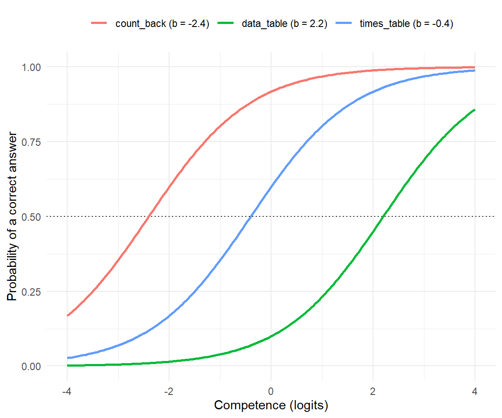
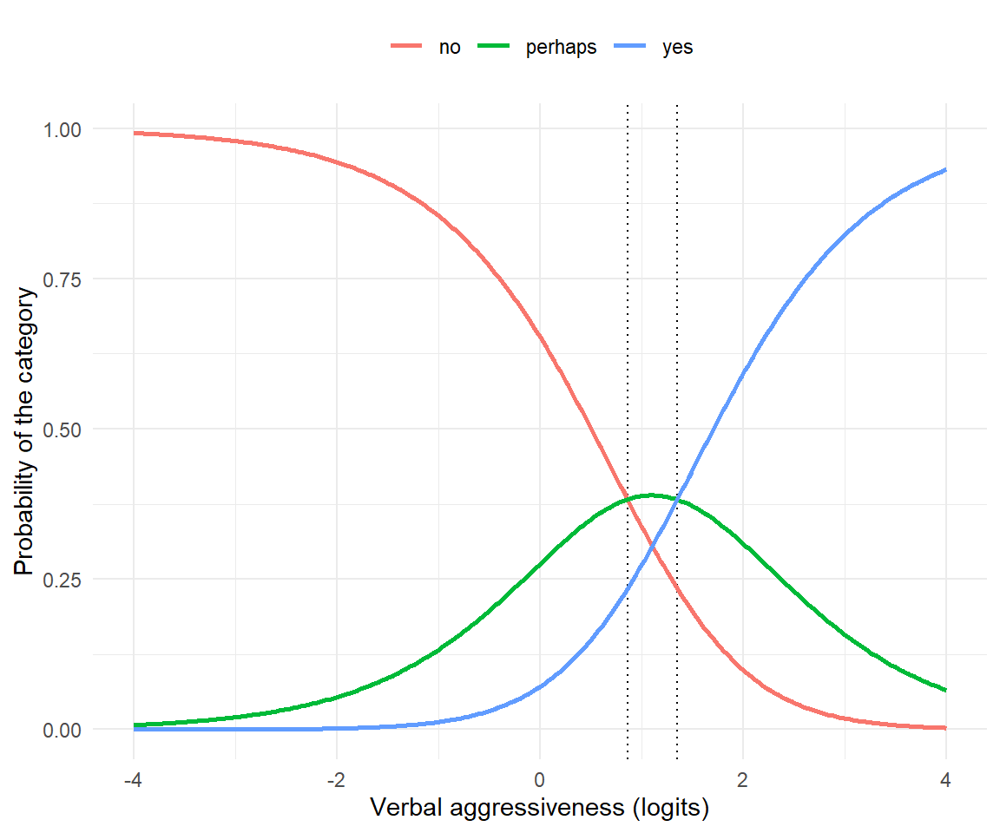
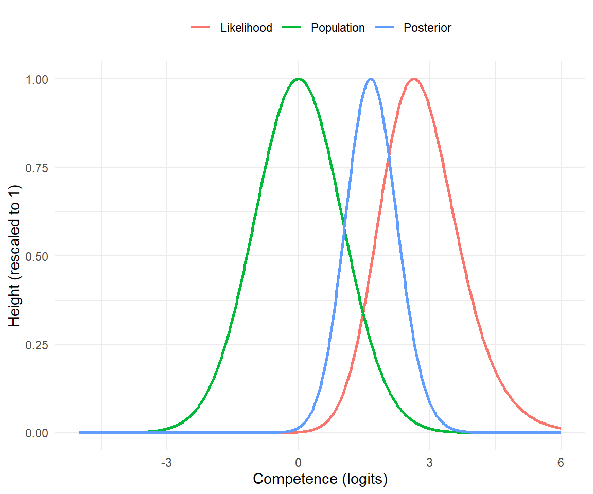
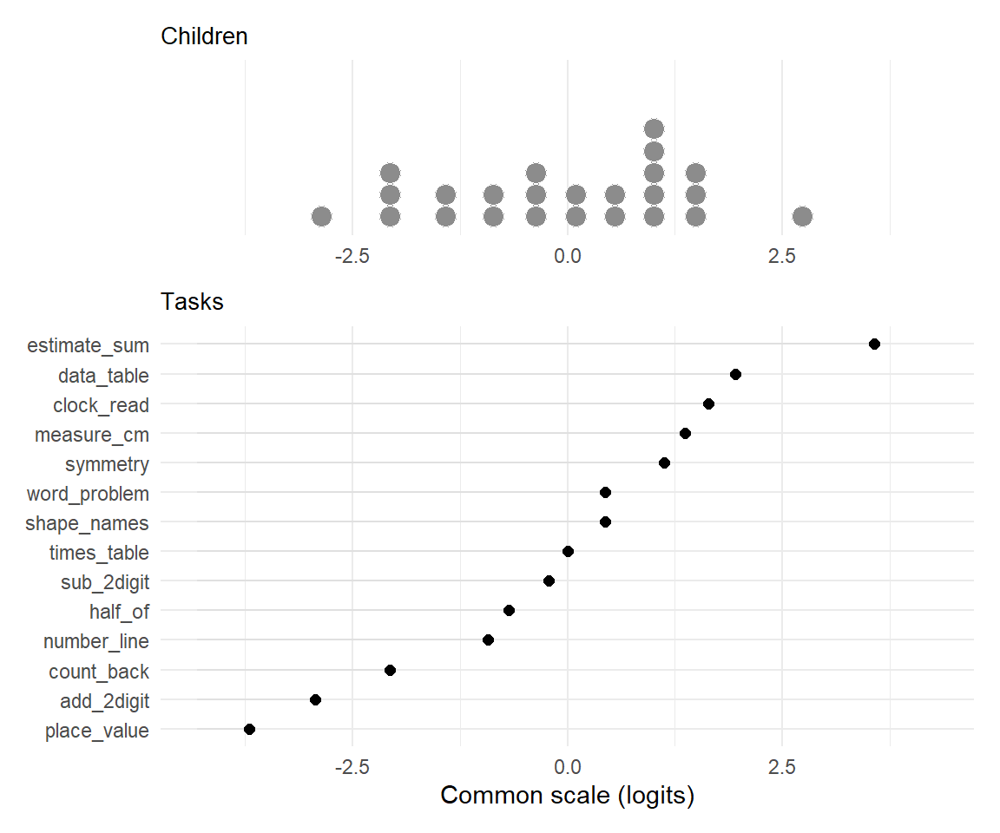
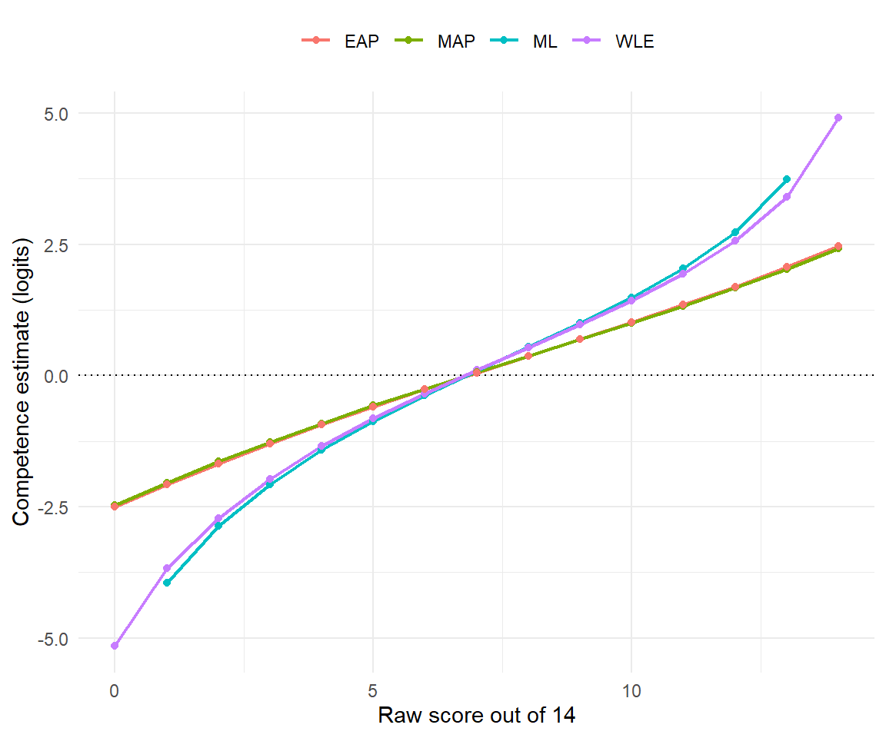
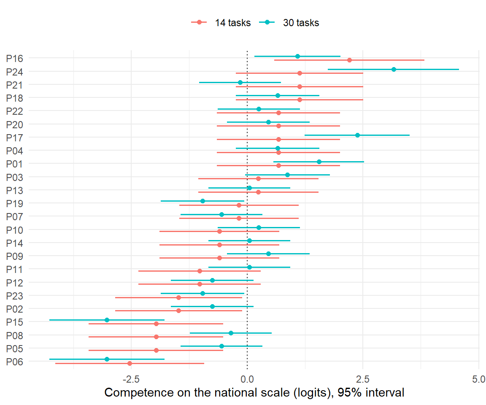
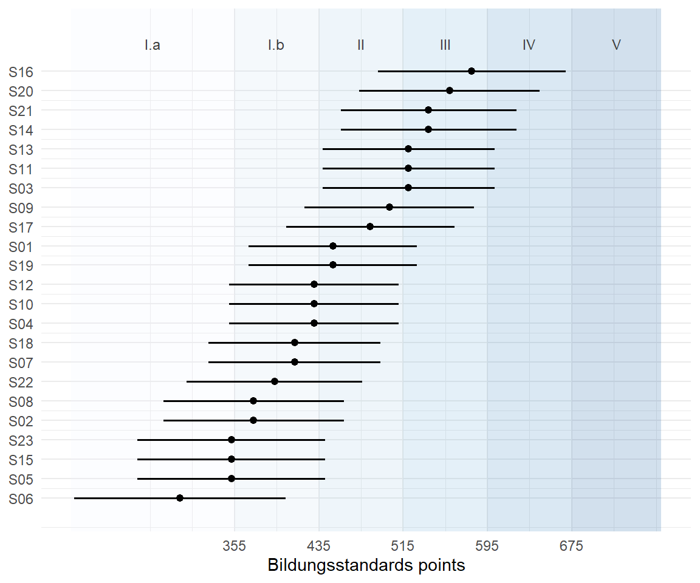

8.7 Items
Item response theory
It is a Monday morning in Year 3. Twenty-four children sit down in front of the same sheet of paper. Fourteen small mathematics tasks: count backwards from 30, find a number on a number line, read a clock, work out half of 18, pull a value out of a little table. Some children finish in ten minutes, some are still staring at task 9 when the bell rings.
By lunchtime the teacher has twenty-four numbers between 0 and 14. And then the awkward questions begin. Is a 9 good? Marie got 9 and Jonas got 9, but they got different tasks right — did they learn the same amount? Task 12 was solved by six children last year and by three children this year; was this year's class weaker, or was this year's version of task 12 harder? And if the school down the road uses a different sheet with twelve tasks, can the two classes be compared at all?
Every one of those questions is about the same thing: the sheet of paper and the children are tangled up in each other. A raw score confounds how much a child can do with how hard the tasks happened to be. Factor analysis, in Section 8.3, took several indicators and asked what latent variable might explain why they covary. Item response theory turns the problem around and looks at one response at a time:
How likely is a person with a particular level of competence to answer this particular item correctly?
That single change of viewpoint makes persons and items equally visible. A wrong answer can be wrong because the child has less of the relevant competence, because the task is difficult, or because the model does not describe what actually happened in that child's head. The rest of this section is about telling those three apart — and about how much data you need before you are allowed to try.
This section is written around one small classroom, because that is where the questions are easiest to feel. Everything scales up unchanged to VERA, TIMSS and PISA; only the number of children changes, and Section 8.7.12 is about exactly how much that number matters.
8.7.1 Where IRT Sits among Latent Variable Models
A first map distinguishes the measurement level of the observed indicators from the form of the latent variable behind them.
| Observed indicators | Continuous latent variable | Categorical latent variable |
|---|---|---|
| Continuous | factor analysis | latent profile analysis |
| Categorical | item response theory / categorical factor analysis | latent class analysis |
Item response theory is therefore not one isolated model in one cell. It is the main family of latent-trait models for categorical item responses. Categorical confirmatory factor analysis (Section 8.5) occupies almost the same mathematical territory but speaks a different dialect: loadings and thresholds rather than discrimination and difficulty.
The table is a map, not a taxonomy. Real models mix several continuous and categorical latent variables, several item formats, repeated measurements, multilevel structure, testlets, response times, or latent classes of response process.
Definition
An item response model states the probability of each possible answer to each item as a function of (i) one or more latent person variables and (ii) one or more item parameters. The Rasch model is the member of that family in which the only item parameter is a difficulty, and in which competence and difficulty enter only through their difference.
8.7.2 A Short History of the Idea
The idea did not arrive fully formed. It was assembled over sixty years, twice independently, in two intellectual traditions that still argue with each other.
| Year | Who | What arrived |
|---|---|---|
| 1925 | Thurstone | persons and items scaled onto one continuum |
| 1952 | Lord | the item characteristic curve as the object of a theory of testing |
| 1960 | Rasch | the one-parameter model, and specific objectivity as a requirement |
| 1968 | Birnbaum | discrimination and guessing parameters: the 2PL and 3PL |
| 1969 | Samejima | the graded response model, for ordered categories |
| 1972 | Bock | the nominal response model, for unordered ones |
| 1973 | Fischer / Andersen | item difficulty explained by item features; a conditional test of the model |
| 1978 | Andrich | the rating scale model |
| 1979 | Wright & Stone | the person-item map, and Rasch measurement as a movement |
| 1981 | Bock & Aitkin | marginal maximum likelihood made practical by an EM algorithm |
| 1982 | Masters | the partial credit model |
| 1989 | Warm | weighted likelihood estimation |
| 1991 | Mislevy | plausible values, so a survey can report a population correctly |
| 2000 | OECD | PISA scales its items with a Rasch and partial credit model |
| 2015 | OECD | PISA switches to a 2PL and generalised partial credit model |
Two traditions, two problems. The American line begins with Louis Leon Thurstone's absolute scaling of the Binet-Simon tasks110 and matures in Frederic Lord's monograph and Ledyard Tucker's item characteristic curve.111 Its motive is practical: the Educational Testing Service has to equate test forms that are not identical. Allan Birnbaum then replaces the normal ogive with the logistic function and adds a discrimination parameter, and after it a lower asymptote for guessing.112 More parameters, better description.
Rasch came the other way round. Georg Rasch was a Danish mathematician who had spent 1935 in London with R. A. Fisher and absorbed Fisher's ideas about sufficiency. After the war he was handed two very concrete jobs: analyse the Danish military's intelligence tests, and evaluate reading tests for children whose schooling had been interrupted. Those children had been tested at different ages with different tests, and he had to compare them anyway. Out of that came Probabilistic Models for Some Intelligence and Attainment Tests.113 His motive was not fit but a philosophical requirement he later called specific objectivity: a comparison between two persons must not depend on which items were used, and a comparison between two items must not depend on which persons answered them.114 The whole disagreement in this section grows from that one sentence.
Then the machinery. Erling Andersen showed how to eliminate the person parameters by conditioning on the raw score, and turned the resulting conditional likelihood into a formal test of the model; Gerhard Fischer decomposed item difficulty into item features.115 116 Benjamin Wright turned Rasch measurement into a movement, a software package and a picture — the person-item map this section draws in Figure 8.11.117 Fumiko Samejima118 and Darrell Bock119 handled ordered and unordered categories, and David Andrich120 and Geoff Masters121 extended the Rasch model itself to items worth 0, 1 or 2 points — where Section 8.7.6 picks it up. Bock and Aitkin made marginal maximum likelihood practical;122 Thomas Warm removed the bias from likelihood scoring;123 and Robert Mislevy, working on the American NAEP survey, invented plausible values, without which PISA could not exist.124 The models went to school from 2000 onwards125 — and in Germany, VERA was developed at Koblenz-Landau in 2002, first written in 2003, and extended to all sixteen Länder by 2007/08.126
The most demanding model is the oldest and the smallest
Normally a field starts simple and adds parameters. Here the opposite happened: Birnbaum's more flexible 2PL and 3PL models came after Rasch's one-parameter model and were seen as progress, while the Rasch community regarded the extra parameters as a retreat. The argument is not statistical but philosophical. If a model with a free discrimination per item always fits better, then no item can ever fail — and a measuring instrument that can never fail a test is not being tested. Rasch's model is the restrictive one on purpose.
Your Turn
The person who introduced a discrimination parameter for each item, and thereby created the 2PL model, was .
The trick that lets a survey report a correct population mean even though every individual score is uncertain is called .
PISA changed its scaling model in , moving from a one-parameter to a two-parameter model.
True or false: Rasch developed his model as a simplification of Lord's earlier work.The two traditions grew up independently and for different reasons. Lord's problem was equating test forms at an American testing agency; Rasch's problem was comparing Danish children who had been given different reading tests at different ages. Rasch's route to the model ran through Fisher's sufficiency, not through Lord's normal ogive.
8.7.3 Persons and Items on a Common Scale
For a binary item, the Rasch model is
\[ P(X_{pi} = 1 \mid \theta_p, b_i) = \frac{\exp(\theta_p - b_i)}{1 + \exp(\theta_p - b_i)}, \]
where \(X_{pi} = 1\) means that person \(p\) answered item \(i\) correctly, \(\theta_p\) is that person's latent competence, and \(b_i\) is that item's difficulty. On the log-odds scale the same statement is a subtraction:
\[ \operatorname{logit}\{P(X_{pi} = 1)\} = \theta_p - b_i. \]
Everything that makes the model useful is in that subtraction:
- if \(\theta_p = b_i\), the predicted probability is exactly \(.50\);
- one logit above the item gives about \(.73\);
- one logit below gives about \(.27\);
- two logits above gives about \(.88\).
A higher number means more competence for a person and more difficulty for an item, and the two live on the same axis. That is why a Rasch difficulty can be printed next to a child's estimate and compared directly, which a percentage never can.
Definition
A logit is a unit of log-odds. A difference of one logit multiplies the odds of a correct answer by \(e \approx 2.72\); a difference of \(0.69\) logits doubles them. Unlike a percentage, a logit means the same thing everywhere on the scale: the step from \(.10\) to \(.21\) and the step from \(.50\) to \(.67\) are both one logit.
Truly Dedicated: probability, odds and log-odds
The whole of it is one ladder with three rungs, and the misreadings all come from stepping over a rung.
Rung one: probability into odds. A probability is trapped between 0 and 1, which makes it a bad thing to add to. Odds are not:
\[ \text{odds} = \frac{p}{1-p}. \]
Odds compare the chance of right with the chance of wrong. They run from 0 to infinity and they multiply rather than add. A probability of \(.5\) is odds of 1 — evens; \(.75\) is 3, read "three to one"; \(.90\) is 9; \(.20\) is \(0.25\), read "one to four". Odds of 2:1 are not 200 per cent — they are \(2/(2+1) = 66.7\) per cent.
Rung two: the logarithm turns multiplying into adding. That is the only thing a logarithm does, and it is the entire reason it appears here:
\[ \ln(a \cdot b) = \ln a + \ln b. \]
The natural logarithm is used because its inverse, \(e^{x}\), undoes it exactly:
\(\ln(e^{x}) = x\). In R, log() already means \(\ln\).
Rung three: the logit is the log of the odds — not the log of the probability.
\[ \operatorname{logit}(p) = \ln\frac{p}{1-p}. \]
Now the Rasch formula rearranges in four lines. Write \(x = \theta_p - b_i\):
\[ \begin{aligned} p &= \frac{e^{x}}{1 + e^{x}} && \text{the model} \\ p\,(1 + e^{x}) &= e^{x} && \text{clear the denominator} \\ p &= e^{x}(1 - p) && \text{collect the } e^{x} \text{ terms} \\ \frac{p}{1-p} &= e^{x} && \text{divide by } (1-p) \end{aligned} \]
The left-hand side is the odds. Take \(\ln\) of both sides and \(\ln(e^{x}) = x\) leaves
\[ \operatorname{logit}(p) = \theta_p - b_i . \]
Person minus item equals the log-odds of a correct answer. That is the sentence the whole model reduces to.
p <- c(0.01, 0.10, 0.20, 0.25, 0.50, 0.667, 0.75, 0.90, 0.99)
knitr::kable(
data.frame(
probability = p,
odds = round(p / (1 - p), 3),
logit = round(qlogis(p), 3),
back = round(plogis(qlogis(p)), 3)
),
caption = "The ladder, in both directions. Notice the symmetry the probability scale hides: .25 and .75 sit at -1.10 and +1.10, .10 and .90 at -2.20 and +2.20. In R, qlogis() is the logit and plogis() is its inverse."
)| probability | odds | logit | back |
|---|---|---|---|
| 0.010 | 0.010 | -4.595 | 0.010 |
| 0.100 | 0.111 | -2.197 | 0.100 |
| 0.200 | 0.250 | -1.386 | 0.200 |
| 0.250 | 0.333 | -1.099 | 0.250 |
| 0.500 | 1.000 | 0.000 | 0.500 |
| 0.667 | 2.003 | 0.695 | 0.667 |
| 0.750 | 3.000 | 1.099 | 0.750 |
| 0.900 | 9.000 | 2.197 | 0.900 |
| 0.990 | 99.000 | 4.595 | 0.990 |
What one logit is worth. From \(\text{odds} = e^{\,\theta - b}\):
- \(\theta - b = 0 \Rightarrow\) odds \(1\), \(p = 50.0\%\);
- \(\theta - b = 1 \Rightarrow\) odds \(e = 2.72\), \(p = 73.1\%\);
- \(\theta - b = -1 \Rightarrow\) odds \(0.37\), \(p = 26.9\%\);
- \(\theta - b = 2 \Rightarrow\) odds \(7.39\), \(p = 88.1\%\).
So one logit multiplies the odds by \(e \approx 2.72\) — it does not double them. Doubling the odds is \(\ln 2 = 0.693\) logits, which corresponds to \(p = 66.7\%\).
A complete numerical example. A person at \(\theta = 1.2\) meets an item at \(b = 0.7\):
theta <- 1.2; b <- 0.7
round(c(logit = theta - b,
odds = exp(theta - b),
probability = plogis(theta - b)), 3)
#> logit odds probability
#> 0.500 1.649 0.622Half a logit above the item, odds of about 1.65 to 1, a solution probability of 62.2 per cent.
And the five misreadings, which are worth more than the algebra:
| Said | Should be |
|---|---|
| "the logit is just \(\log(p)\)" | the logit is \(\ln\{p/(1-p)\}\), the log of the odds |
| "\(\theta = 2\) is twice as able as \(\theta = 1\)" | the logit scale has no natural zero and is not a ratio scale; only distances mean anything |
| "\(\theta - b = 2\) means odds of 2 to 1" | odds of \(e^2 = 7.39\) to 1; odds of 2 to 1 is \(\ln 2 = 0.693\) logits |
| "\(p = .75\) means odds of 0.75" | odds are \(.75/.25 = 3\) to 1 |
| "b is the percentage of people who solve the item" | b is a position on the shared logit scale; the percentage also depends on who took the test |
The second row is worth dwelling on, because the rest of this section depends on it. In the Rasch model the probability depends only on the difference \(\theta - b\), so \(\theta = 2\) with \(b = 1\) and \(\theta = 12\) with \(b = 11\) describe exactly the same situation. The scale therefore needs a convention fixing where zero is — see somebody has to choose where zero is — and that zero is a reference point, not an origin of ability. Distances are meaningful; positions are meaningful only relative to the convention.
Finally, why this is elegant rather than merely clever. On the probability scale the relation between ability and difficulty is S-shaped and non-linear; after the logit transformation it is a subtraction. That is what puts persons and items on one metric, and why a step of one logit means the same thing at the bottom of the scale as at the top.
The model is also a recipe
A response model says how the data would have arisen. That means it can be run forwards as well as backwards, and the fastest way to understand a model is to use it to build a world you already know the answer to. So let us hire a teacher, write fourteen tasks, and enrol twenty-four children.
Here is the test the children will sit. The right-hand column is the only thing the model needs: where each task sits on the logit scale of the previous page.
| task | what the child is asked to do | difficulty |
|---|---|---|
| count_back | count backwards from 30 in steps of one | -2.4 |
| number_line | mark 40 on a number line running from 0 to 100 | -1.9 |
| place_value | say how many tens are in 342 | -1.5 |
| add_2digit | add 27 and 46 in writing | -1.1 |
| sub_2digit | subtract 38 from 71 in writing | -0.8 |
| times_table | give 7 x 8 from memory | -0.4 |
| half_of | work out half of 18 | -0.1 |
| word_problem | a two-sentence word problem with one operation | 0.3 |
| shape_names | name a rectangle, a triangle and a circle | 0.6 |
| symmetry | draw the mirror image of a shape across a line | 1.0 |
| clock_read | read 07:45 from an analogue clock | 1.4 |
| measure_cm | measure a line to the nearest centimetre | 1.8 |
| data_table | pull one value out of a small table | 2.2 |
| estimate_sum | estimate 198 + 403 without calculating it | 2.7 |
Three lines of R turn that column into a class. There is no library call and no model fitting here — this is the formula from the top of the section, run forwards.
set.seed(2026)
difficulty <- setNames(task_sheet$difficulty, task_sheet$task)
# Twenty-four children, competence drawn from a normal distribution.
competence <- rnorm(24, mean = 0.3, sd = 1.1)
# The Rasch model itself: one subtraction and one coin flip per cell.
prob <- plogis(outer(competence, difficulty, "-"))
responses <- matrix(rbinom(length(prob), size = 1, prob = prob), nrow = 24,
dimnames = list(sprintf("P%02d", 1:24), names(difficulty)))| count_back | number_line | place_value | add_2digit | sub_2digit | times_table | half_of | word_problem | total | |
|---|---|---|---|---|---|---|---|---|---|
| P01 | 1 | 1 | 1 | 1 | 0 | 1 | 1 | 1 | 9 |
| P02 | 1 | 0 | 1 | 1 | 0 | 0 | 1 | 0 | 4 |
| P03 | 0 | 1 | 1 | 1 | 1 | 0 | 1 | 1 | 8 |
| P04 | 1 | 1 | 1 | 1 | 1 | 0 | 1 | 0 | 9 |
| P05 | 0 | 1 | 1 | 1 | 0 | 0 | 0 | 0 | 3 |
| P06 | 1 | 0 | 1 | 0 | 0 | 0 | 0 | 0 | 2 |
Two things about this class are worth saying out loud, because the rest of the section leans on both. First, we know the truth: the fourteen difficulties and the twenty-four competences are written down above, so every estimate can be checked against the answer. Second, the data were generated by a perfect Rasch model — no misfitting item, no guessing, no second dimension. Whatever goes wrong from here is not the model's fault. It is the sample size.
Nobody scored 0 and nobody scored 14, which is lucky and will matter in Section 8.7.9.

Figure 8.8: Three of the fourteen tasks, drawn as item characteristic curves. All Rasch curves have the same shape and differ only in where they sit; each crosses the dotted line at .50 exactly above its own difficulty.
Your Turn
A child's competence is exactly equal to an item's difficulty. The probability that the child answers correctly is .
The same child meets a second item that is one logit easier. The probability is now closest to .
True or false: doubling a child's probability of a correct answer always means adding the same number of logits, no matter where on the scale you start.Probabilities are bounded at 1. Going from .10 to .20 is possible; going from .60 to 1.20 is not. Logits are additive in the odds, not in the probability.
8.7.4 Why Begin with Rasch?
The Rasch model is attractive because it is small, interpretable and demanding. Its defining restrictions are:
- every item has its own difficulty \(b_i\);
- all items discriminate equally strongly;
- there is no item-specific guessing parameter;
- given competence, responses are locally independent.
Those four restrictions buy four consequences.
One additive comparison
The response probability depends only on \(\theta_p - b_i\). A difference of one logit means the same thing at the bottom of the scale and at the top. This is what makes it legitimate to say that a child moved half a logit between two measurements.
A raw score can be sufficient
For a complete response vector to the same set of binary Rasch items, the number of correct answers is a sufficient statistic for the person parameter. Two children with the same raw score receive the same Rasch estimate, even if they solved entirely different items.
This is Fisher's sufficiency, and it is the reason Rasch's model has the shape it has. It also stops holding the moment children receive different item sets, items are allowed different discriminations, responses go missing in a way that depends on ability, or the model gains a second dimension.
Truly Dedicated: watching the person parameter disappear
Sufficiency is not a slogan; it is a cancellation you can do on the back of an
envelope. Take two items, times_table (\(b_1 = -0.4\)) and symmetry
(\(b_2 = 1.0\)), and a child who got exactly one of them right. Which one?
\[ P\big(X = (1,0) \mid r = 1\big) = \frac{e^{\theta - b_1}}{e^{\theta - b_1} + e^{\theta - b_2}} = \frac{e^{-b_1}}{e^{-b_1} + e^{-b_2}} = \frac{e^{0.4}}{e^{0.4} + e^{-1.0}} = 0.80 . \]
The \(e^{\theta}\) appears in every term of numerator and denominator and cancels. Whoever the child is — the weakest in the class or the strongest — given that they solved exactly one of the two, the odds are four to one that it was the easier one. The competence has left the equation, and what remains is a likelihood that contains only item parameters.
That is conditional maximum likelihood, the estimator RM() uses. It is why
item calibration in a Rasch model does not need to assume anything about the
distribution of competence in the sample — and why it exists only inside the Rasch
family, because no other model lets the person parameter cancel like that.
Item and person comparisons can be separated
Under model fit, comparisons among persons do not depend on which items were used, and comparisons among items do not depend on which persons answered them — apart from the uncertainty that finite data always introduce. Rasch called this specific objectivity, and it is the property that makes item banking, booklet designs and trend comparison possible at all.
The model can be tested rather than merely fitted
Rasch measurement treats equal discrimination and invariance as substantive requirements. When an item misbehaves, the first question is not "which model has the better information criterion" but "what is wrong with this item, this scoring, this dimension or this population". Section 8.7.19 is a list of ways to ask.
This is also the limitation, and it should be said plainly. The Rasch model may simply be too restrictive for the data at hand. If some items separate weak from strong children far more sharply than others, a two-parameter model describes what happened better — and pretending otherwise does not make the measurement more objective.
"Rasch fits better" and "Rasch is the right model" are different claims. A 2PL model has more parameters and will essentially always fit at least as well. The Rasch argument is that a set of items which needs free discriminations has not yet been shown to measure one thing on one scale.
There is exactly one model in which counting works
The four restrictions above look like a list of things somebody decided to assume. They are not. Andersen proved the converse: within a broad class of item-response models, the Rasch model is the only one for which the raw score is a sufficient statistic for the person parameter.127
So the choice is not between Rasch and something slightly less tidy. It is between a model in which "how many did you get right" is a complete summary of your answers, and every other model, in which it is not. Everyone who has ever added up ticks on a test has been assuming a Rasch model without knowing it.
Reading
The Rasch-versus-2PL argument has been running for sixty years and is worth watching first-hand rather than being summarised. Andrich's Controversy and the Rasch model sets out the measurement position with unusual clarity, and treats the disagreement as a genuine paradigm difference rather than a technical dispute.128
8.7.5 IRT Is a Family of Models
Different item formats and different response processes need different response functions. The catalogue below is the map most people actually want when they ask "what is the difference between IRT and the Rasch model".
Two clarifications that save a lot of confusion later.
Rasch versus 1PL. Both impose equal discrimination, so as response models they are the same thing. They differ in how the scale is fixed: a Rasch parameterisation sets all slopes to exactly 1 and lets the latent variance be estimated, while a 1PL parameterisation estimates one common slope and fixes the latent variance to 1. After rescaling, the fitted probabilities are identical. The names carry a cultural difference, not a mathematical one.
Partial credit versus graded response. These two look interchangeable and are not, and the difference is worth ten minutes once rather than a decade of vague unease. Both take an item scored 0, 1, 2. Both produce thresholds. Both usually rank people almost identically. What differs is the question each threshold answers.
| Partial credit model | Graded response model | |
|---|---|---|
| The question a threshold answers | given that you scored 1 or 2, how likely is 2? | how likely are you to score at least 2? |
| Kind of comparison | adjacent categories, one step at a time | cumulative: everything at or above a category |
| Discrimination | equal for all items, by construction | one per item, freely estimated |
| Is the raw score sufficient? | yes - it is a Rasch model | no |
| Can a category be 'squeezed out'? | yes: disordered thresholds are possible and informative | no: the thresholds are ordered by construction |
| Estimated by | eRm, TAM, mirt | mirt, ltm |
The last two rows are where it becomes practical. Because the partial credit model compares adjacent categories, it can report a threshold ordering that runs backwards — the second threshold below the first — and that is not a failure but a message: hardly anybody ever lands in the middle category, so "partial credit" is not doing any work on this item. The verbal-aggression data of the next section contains exactly one such item. A graded response model cannot say this, because its cumulative thresholds are ordered by construction, so the same problem simply disappears into the parameters.
A useful way to read the catalogue: everything in the Rasch family keeps the raw score (or the weighted raw score) sufficient and therefore keeps specific objectivity. Everything in the Birnbaum family trades that away for a better description of the data.
Truly Dedicated: what a discrimination parameter actually does
The 2PL model adds one number per item:
\[ P(X_{pi} = 1) = \frac{\exp\{a_i(\theta_p - b_i)\}}{1 + \exp\{a_i(\theta_p - b_i)\}} . \]
Geometrically \(a_i\) is the steepness of the curve at its midpoint. A steep item separates children just below its difficulty from children just above it very sharply, and says almost nothing about anyone else. A flat item says a little about everybody.
Two consequences follow, and they are the whole argument.
First, a steep item deserves more weight in the person score than a flat one, so the sufficient statistic is no longer the raw score but the sum of responses weighted by \(a_i\). Two children with the same number correct can now receive different competence estimates depending on which items they got right.
Second, the ordering of items by difficulty can now depend on which children you ask, because curves with different slopes cross. Two items may swap places between a weak and a strong group. Specific objectivity is gone — not damaged, gone — and that is precisely what the Rasch tradition refuses to give up.
8.7.6 Models within the Rasch Family
The binary Rasch model is only the beginning. Five extensions cover almost everything a school assessment needs.
Dichotomous Rasch model
Each item is scored 0 or 1, each item has one difficulty. This is the model of the classroom test in this section.
Partial credit model
An item awards ordered scores such as 0, 1, 2 — no credit, partial credit, full credit. Masters' insight was that you do not need a new idea, only a repeated one: apply the Rasch logic to each boundary between adjacent categories. An item with three categories therefore has two thresholds, \(\tau_{i1}\) and \(\tau_{i2}\):
\[ P(X_{pi} = k) \propto \exp\left( k\,\theta_p - \sum_{j \le k} \tau_{ij} \right), \qquad k = 0, 1, 2 . \]
The first threshold is the point on the scale where "no credit" and "partial credit" are equally likely; the second is where "partial credit" and "full credit" are equally likely. Item difficulty becomes the average of the thresholds, and each item is free to have its own spacing between them.
Here is the model on real data. The VerbalAggression data set contains 316
students who answered 24 statements about frustrating situations with no,
perhaps or yes.129
data("VerbalAggression", package = "psychotools")
aggression <- as.matrix(VerbalAggression$resp)
storage.mode(aggression) <- "integer"
pcm_fit <- PCM(aggression[, 1:6])
round(thresholds(pcm_fit)$threshtable[[1]], 2)
#> Location Threshold 1 Threshold 2
#> S1WantCurse -0.53 -0.78 -0.28
#> S1DoCurse -0.44 -0.88 0.00
#> S1WantScold -0.11 -0.21 0.00
#> S1DoScold 0.13 -0.19 0.46
#> S1WantShout 0.45 -0.01 0.91
#> S1DoShout 1.10 0.86 1.35Read the last row: for "I would shout at the bus driver" the two thresholds sit at 0.86 and 1.35 logits, so the middle category perhaps occupies a narrow strip of the scale less than half a logit wide. Figure 8.9 draws that strip.
When that strip closes entirely, the thresholds come out disordered — the second below the first — and the model is telling you that the middle category is never the most likely answer for anybody:
all_thresholds <- thresholds(PCM(aggression))$threshtable[[1]]
disordered <- all_thresholds[, "Threshold 2"] < all_thresholds[, "Threshold 1"]
round(all_thresholds[disordered, ], 2)
#> Location Threshold 1 Threshold 2
#> 0.86 0.89 0.83One item of the twenty-four: "A clerk gives me faulty information and I miss my train - I would shout." It offers three answers and effectively uses two. People say no or they say yes; perhaps is a door nobody walks through. That is a finding about the response format, not a violation of the model — and it is a finding only a partial credit model can report.

Figure 8.9: Category probabilities for the item 'I would shout at the bus driver'. The middle category never becomes the most likely answer by much: between the two dotted thresholds it peaks at only .39, because the two thresholds are close together.
Rating scale model
Andrich's rating scale model is the partial credit model with one restriction added: the spacing of the thresholds is the same for every item, and items differ only in overall location. That is the natural model for a questionnaire where every statement offers the same four boxes from "strongly disagree" to "strongly agree".
The restriction is testable, because the rating scale model is nested inside the partial credit model.
rsm_fit <- RSM(aggression[, 1:6])
lr_statistic <- 2 * (pcm_fit$loglik - rsm_fit$loglik)
lr_df <- pcm_fit$npar - rsm_fit$npar
c(
PCM_logLik = round(pcm_fit$loglik, 2),
RSM_logLik = round(rsm_fit$loglik, 2),
LR = round(lr_statistic, 2),
df = lr_df,
p_value = round(pchisq(lr_statistic, lr_df, lower.tail = FALSE), 3)
)
#> PCM_logLik RSM_logLik LR df p_value
#> -1001.860 -1004.570 5.430 5.000 0.365For these six items the more restrictive model survives: five extra parameters buy a likelihood improvement of 5.43, which is exactly what chance would give (\(p = 0.37\)). The shared category structure is a reasonable description, so the simpler model can be kept.
Many-facet Rasch model
When a human being marks the answer, the mark depends on three things, not two: the child, the task, and the rater. The many-facet model adds them additively,
\[ \operatorname{logit}\{P(\text{correct})\} = \theta_p - b_i - s_r, \]
with \(s_r\) the severity of rater \(r\). Further facets — occasion, test mode, interviewer — enter the same way. This is how essay marking, diving competitions and clinical assessments are put onto one scale.
Multidimensional and explanatory Rasch models
Two more directions. Multidimensional models give the person several competences at once — reading and listening, say — and let each item load on the ones it needs. Explanatory models go the other way and take the item apart: Fischer's linear logistic test model writes item difficulty as a weighted sum of item features, so that "this task is hard because it needs two operations and a context sentence" becomes a testable claim rather than a hunch.
Every extension in this list keeps the additive structure — something minus something on a logit scale. That is what makes them Rasch models. What they add is a further term, not a further multiplier.
Your Turn
A questionnaire uses the same five-point agreement scale for all twenty statements. The model that assumes the five categories are spaced the same way on every statement is the .
An oral examination is marked by four different examiners, and you suspect one of them is systematically harsher. The model that turns that suspicion into a parameter is the .
True or false: the partial credit model allows the gap between "0 and 1" to be larger than the gap between "1 and 2" for one item and smaller for another.
8.7.7 Three Choices That Are Often Mixed Together
Three decisions get compressed into the sentence "we used a Rasch model", and separating them removes most of the confusion in this field.
First: the response model
How does the probability of each answer depend on person and item? Rasch, 2PL, partial credit, graded response, multidimensional — the catalogue in Section 8.7.5.
Second: estimation of the parameters
How are the item parameters calibrated from the data?
| Method | Basic idea | Needs | Typical home |
|---|---|---|---|
| Conditional ML (CML) | Condition on the raw score, so the person parameters cancel out of the item likelihood | sufficiency, so only the Rasch family | classical Rasch work, eRm |
| Marginal ML (MML) | Integrate over an assumed population distribution of competence | an assumption about the population | large-scale assessment, TAM and mirt |
| Joint ML (JML) | Estimate all person and all item parameters simultaneously | nothing beyond the model | historically important, biased with short tests |
| Bayesian / MCMC | Combine the likelihood with priors and sample the whole posterior | priors | complex hierarchical models |
Third: person scoring after calibration
Once the items are calibrated, how is a person's uncertain competence summarised? EAP, MAP, WLE and plausible values are alternatives at this third stage. They are not different Rasch models, and choosing between them is not a modelling decision. Sections 8.7.8 and 8.7.9 are about this stage alone.
"PISA uses plausible values" and "PISA uses a 2PL model" are statements about two different stages. A plausible value can be drawn from any calibrated IRT model, and a Rasch model can be scored with any of the five rules.
8.7.8 From a Response Pattern to a Person Distribution
After calibration, a child's answers produce a likelihood for \(\theta_p\):
\[ L(\theta_p \mid \mathbf{x}_p, \hat{\mathbf{b}}) = \prod_i P(X_{pi} = x_{pi} \mid \theta_p, \hat b_i). \]
Multiplying that likelihood by a population distribution gives a posterior:
\[ p(\theta_p \mid \mathbf{x}_p) \propto L(\theta_p \mid \mathbf{x}_p)\, p(\theta_p). \]
The object that matters is the whole curve. A person score is a summary of it — or, in the case of a plausible value, a single draw from it.
Take P16, the strongest child in the class, who answered twelve of the fourteen tasks correctly. Three curves, one child:
pattern <- responses["P16", ]
grid <- seq(-5, 6, length.out = 1000)
likelihood <- sapply(grid, function(theta) {
p <- plogis(theta - difficulty)
prod(p^pattern * (1 - p)^(1 - pattern))
})
population <- dnorm(grid, mean = 0, sd = 1)
posterior <- likelihood * population
rescale <- function(x) x / max(x)
data.frame(
theta = grid,
Likelihood = rescale(likelihood),
Population = rescale(population),
Posterior = rescale(posterior)
) %>%
tidyr::pivot_longer(-theta, names_to = "curve") %>%
ggplot(aes(theta, value, colour = curve)) +
geom_line(linewidth = 0.9) +
labs(x = "Competence (logits)", y = "Height (rescaled to 1)", colour = NULL) +
theme(legend.position = "top")
Figure 8.10: One child, three curves. The likelihood of P16's twelve-out-of-fourteen pattern peaks at 2.63 logits; the population distribution peaks at 0; the posterior lands at 1.68. P16's true competence, which we happen to know, is 1.78 — closer to the shrunken estimate than to the likelihood peak.
The pull towards the population mean is called shrinkage, and it is not a flaw. With fourteen items the likelihood is broad, so the population distribution still carries real information about where this child probably is — in this case it carries the child closer to the truth, not further from it. With eighty items the likelihood would be narrow and the prior would barely move it.
Shrinkage is fair on average and unfair in individual cases. The strongest child in a class is systematically pulled down and the weakest is systematically pulled up, which is exactly what you do not want if the number is going on a report card next to that child's name. This is the main argument for using WLE rather than EAP for individual feedback.
8.7.9 Person-Score Options
| Result | Definition | Uses a prior? | Main strength | Main caution |
|---|---|---|---|---|
| ML | value maximising the response likelihood | no | depends only on the answers and the calibrated items | undefined for all-wrong and all-correct patterns |
| WLE | bias-corrected likelihood estimate | no population prior | removes most of the small-sample bias of ML; usually the choice for an individual report | still a point estimate; report the standard error with it |
| MAP | mode of the posterior | yes | finite and stable, including at the extremes | shrinks towards the population |
| EAP | mean of the posterior | yes | minimises expected squared error; comes with a posterior SD | shrinks towards the population; depends on the population model |
| Plausible value | random draw from the posterior | yes | carries the uncertainty into population analyses | not an individual score and never to be averaged into one |
EAP: the centre of gravity
\[ \hat\theta_p^{\,\text{EAP}} = E(\theta_p \mid \mathbf{x}_p) \]
The posterior mean. Stable for short tests and extreme patterns, because the population distribution supplies information the answers do not. The price is shrinkage.
MAP: the highest point
\[ \hat\theta_p^{\,\text{MAP}} = \operatorname*{arg\,max}_{\theta_p} p(\theta_p \mid \mathbf{x}_p) \]
The posterior mode. If the posterior is symmetric, MAP and EAP nearly coincide; if it is skewed, they separate. MAP is often cheaper to compute in high-dimensional models because it maximises rather than integrates.
WLE: a likelihood score with a bias correction
Warm's weighted likelihood estimate solves a modified likelihood equation.130 It uses no population prior, so it shrinks far less than EAP or MAP, and unlike ML it stays finite for a perfect or an empty score. When a single number has to be handed to a teacher or a parent, this is usually the one.
Plausible values: several completed versions of the latent variable
\[ \theta_p^{(m)} \sim p(\theta_p \mid \mathbf{x}_p, \mathbf{z}_p), \]
where \(\mathbf{z}_p\) may contain background variables in a latent regression model. Several draws create several completed data sets; a population analysis is run once per draw and the results are pooled with the multiple-imputation rules of Section 4.1.
Plausible values are the right tool for population means, group gaps, correlations and regression coefficients. They are deliberately unsuitable for ranking individual children.
EAP, MAP and WLE answer: which single value should stand for this child's uncertain competence? Plausible values answer a different question: how can a later analysis of the whole population keep that uncertainty instead of pretending the latent variable was observed?
8.7.10 Why the Methods Give Different Scores
The five rules agree when the likelihood is narrow and disagree when it is broad. They separate when
- the test is short;
- many responses are missing;
- the pattern is all correct or all incorrect;
- the child sits far from the centre of the item difficulties;
- the posterior is skewed;
- background variables strongly predict the trait;
- the item model is multidimensional.
Section 8.7.11 draws the disagreement for the classroom test, and it is larger than most people expect.
8.7.11 A Minimal Rasch Application in R
Everything is in place: a class, fourteen tasks, and a model. Four steps follow — estimate the item difficulties, look at them, put children and tasks on one picture, and score the children four different ways.
The package is eRm.131 It estimates the Rasch family by conditional
maximum likelihood, which is the estimator that uses the sufficiency of the raw
score and therefore the one that delivers specific objectivity. Section
8.7.21 shows the same analysis in TAM and mirt, which is what a
large-scale assessment would use.
Step 1: estimate the model
rasch_fit <- RM(responses)
# eRm reports item EASINESS; difficulty is its negative.
item_difficulty <- -coef(rasch_fit)
names(item_difficulty) <- sub("beta ", "", names(coef(rasch_fit)))
# The scale has no natural origin, so centre it on the average task.
item_difficulty <- item_difficulty - mean(item_difficulty)The sign trap. eRm returns easiness parameters, TAM and mirt return
difficulty. A whole analysis can silently come out upside down if the
conversion is skipped. The check takes two seconds: the item everybody solved
must end up with the lowest number.
Step 2: read the item table
item_table <- data.frame(
solved = colMeans(responses),
truth = difficulty - mean(difficulty),
estimate = item_difficulty,
std_error = rasch_fit$se.beta
)
knitr::kable(
item_table[order(item_table$estimate), ],
digits = 2,
caption = "Fourteen tasks in one class of twenty-four. 'truth' is the value the data were generated from; 'estimate' is what the model recovered. They correlate at .89 and are individually wrong by up to 1.1 logits, and the standard errors say so."
)| solved | truth | estimate | std_error | |
|---|---|---|---|---|
| place_value | 0.96 | -1.63 | -3.70 | 0.99 |
| add_2digit | 0.92 | -1.23 | -2.93 | 0.75 |
| count_back | 0.83 | -2.53 | -2.07 | 0.59 |
| number_line | 0.67 | -2.03 | -0.93 | 0.50 |
| half_of | 0.62 | -0.23 | -0.68 | 0.49 |
| sub_2digit | 0.54 | -0.93 | -0.22 | 0.47 |
| times_table | 0.50 | -0.53 | 0.00 | 0.47 |
| shape_names | 0.42 | 0.47 | 0.44 | 0.47 |
| word_problem | 0.42 | 0.17 | 0.44 | 0.47 |
| symmetry | 0.29 | 0.87 | 1.12 | 0.49 |
| measure_cm | 0.25 | 1.67 | 1.37 | 0.51 |
| clock_read | 0.21 | 1.27 | 1.64 | 0.53 |
| data_table | 0.17 | 2.07 | 1.95 | 0.57 |
| estimate_sum | 0.04 | 2.57 | 3.56 | 0.98 |
Three things to notice, in increasing order of importance.
The ordering of estimate is exactly the ordering of solved. That is not a
coincidence and not a weakness — for a complete dichotomous Rasch test, the item
difficulty estimate is a strictly increasing function of the number of children
who got the item wrong. Rasch does not reorder the items. What it does is put
them on a scale with a defined unit, on which the children also live.
The standard errors run from 0.47 to 0.99 logits. The best-measured task in this class has a 95% interval about two logits wide.
And count_back, which was generated as the second-easiest task, came out third,
while place_value came out easiest by a full logit. Nothing is wrong with the
model, the items or the children. There are simply twenty-four of them.
What range do these numbers have?
The first thing anyone wants after a fit is a sense of what counts as a big number, and logits give no help until you have one. The answer follows from the ladder of Section 8.7.3 and it is worth pinning down once.
distance <- 0:4
knitr::kable(
data.frame(
`theta - b` = distance,
`P(correct)` = round(plogis(distance), 3),
`information p(1-p)` = round(plogis(distance) * (1 - plogis(distance)), 3),
`share of the maximum` = round(plogis(distance) * (1 - plogis(distance)) / 0.25, 2),
check.names = FALSE
),
caption = "How fast an item stops telling you anything. An item is most informative about a person standing exactly on it; two logits away it carries 42% of that, three logits away 18%, four logits away 7%."
)| theta - b | P(correct) | information p(1-p) | share of the maximum |
|---|---|---|---|
| 0 | 0.500 | 0.250 | 1.00 |
| 1 | 0.731 | 0.197 | 0.79 |
| 2 | 0.881 | 0.105 | 0.42 |
| 3 | 0.953 | 0.045 | 0.18 |
| 4 | 0.982 | 0.018 | 0.07 |
That decay is why logits do not run far in practice, and it sets three rules of thumb that carry through the rest of this section.
Item difficulties normally sit between about \(-3\) and \(+3\). Beyond that an item is solved by almost everybody or almost nobody, so its difficulty is estimated from a handful of responses and its standard error explodes. In this class the range is \(-3.70\) to \(+3.56\), and the two items at the ends have standard errors of \(0.99\) against \(0.47\) in the middle — the model is telling you it barely saw them. Real, carefully assembled tests are narrower: the thirteen Innsbruck exam items of Section 8.7.18 span \(-1.27\) to \(+2.31\).
Person estimates normally sit between about \(-4\) and \(+4\). A test cannot distinguish beyond the range its items cover, and above four logits every item is answered correctly with probability \(.98\), so there is nothing left to measure with. This is also why perfect and empty score patterns are special: maximum likelihood sends them to \(\pm\infty\), and WLE returns a finite value only because the bias correction pins them somewhere — \(-5.16\) and \(+4.91\) in Table 8.12, numbers produced by the test, not by the children.
A population has a standard deviation of about one logit — by construction. In this class the twenty-four children were drawn with \(\text{sd} = 1.1\), and a real reference population is defined to have a spread of about one (Section 8.7.15). So a difference of one logit is roughly one standard deviation of the population: large. Half a logit is a substantial difference; a tenth of a logit is nothing. On the Bildungsstandards metric those become 90 points, 45 points and 9 points respectively.
Put together, the three rules give a quick reading test for any IRT output. If item difficulties run from \(-8\) to \(+8\), something has gone wrong — usually an item that nobody or everybody solved, or a scale that was not centred. If person estimates cluster inside \(\pm 0.5\), the test was far too easy or too hard for this group. And if a report describes a difference of \(0.05\) logits as meaningful, it is describing noise.
Rasch does not tell you which item is harder — you knew that already
With complete data and dichotomous items, the Rasch ranking of items is identical to the ranking by percentage correct, and the Rasch ranking of children is identical to the ranking by raw score. Every bit of the ordering was already in the crosstab.
What the model adds is everything the ordering cannot do: a unit that means the same thing everywhere, a standard error for each number, the ability to compare children who sat different tests, and a set of assumptions that the data are allowed to contradict. Measurement is not about finding out who is first. It is about knowing how far apart people are, and how sure you are.
Step 3: put children and tasks on one picture
This is Ben Wright's picture, and it is the single most useful output of a Rasch analysis.

Figure 8.11: A person-item map. Children above, tasks below, one shared logit axis. The class piles up between -1 and +1.5, where five of the fourteen tasks sit; place_value and estimate_sum are so far outside the class that they measure almost nobody.
A test is well targeted when the tasks sit where the children sit. This one is
not, quite: estimate_sum was solved by one child in twenty-four and
place_value by twenty-three, so both spend almost all their information on parts
of the scale where nobody is standing. Section 8.7.12 puts a number
on what that costs.
Step 4: score the children four ways
The five scoring rules of Section 8.7.9 are all summaries of the same posterior curve, so the interesting question is not how to compute them but how far apart they end up. Table 8.12 answers that for every score a child could have got on this test.
Truly Dedicated: the four scoring rules in twenty lines
No package is needed for any of this, and writing it out once removes the mystery for good. The grid is the posterior of Section 8.7.8, evaluated at 1,201 points; everything else is a different way of pointing at it.
score_pattern <- function(pattern, b, prior_sd = 1) {
grid <- seq(-6, 6, length.out = 1201)
p_mat <- plogis(outer(grid, b, "-"))
lik <- apply(p_mat, 1, function(p) prod(p^pattern * (1 - p)^(1 - pattern)))
post <- lik * dnorm(grid, mean = 0, sd = prior_sd)
post <- post / sum(post)
# ML: the top of the likelihood, undefined at the two extremes
ml <- if (sum(pattern) %in% c(0, length(pattern))) NA_real_ else
optimize(function(t) -sum(pattern * (t - b) - log1p(exp(t - b))), c(-8, 8))$minimum
# WLE: Warm's bias-corrected likelihood equation, solved for its root
warm <- function(t) {
p <- plogis(t - b)
sum(pattern - p) + sum(p * (1 - p) * (1 - 2 * p)) / (2 * sum(p * (1 - p)))
}
wle <- uniroot(warm, c(-10, 10))$root
eap <- sum(grid * post) # posterior mean
c(raw = sum(pattern),
ML = ml,
WLE = wle,
SE_WLE = 1 / sqrt(sum(plogis(wle - b) * (1 - plogis(wle - b)))),
MAP = grid[which.max(post)], # posterior mode
EAP = eap,
SD_EAP = sqrt(sum((grid - eap)^2 * post)))
}Four lines carry the whole argument of Section 8.7.9. ml
returns NA when the pattern is all right or all wrong, because the likelihood
never turns over. wle solves Warm's corrected equation instead and therefore
always returns something. post is where the population distribution enters —
delete the dnorm() factor and MAP and EAP stop shrinking. And SE_WLE is the
test information at that point, which is the only line that depends on how many
items there are.
easiest_first <- order(item_difficulty)
score_table <- t(sapply(0:14, function(r) {
pattern <- rep(0, 14)
if (r > 0) pattern[easiest_first[1:r]] <- 1
score_pattern(pattern, item_difficulty)
}))| correct out of 14 | ML | WLE (standard error) | MAP | EAP (posterior SD) |
|---|---|---|---|---|
| 0 | -- | -5.16 (1.73) | -2.47 | -2.50 (0.67) |
| 1 | -3.95 | -3.67 (1.10) | -2.04 | -2.07 (0.64) |
| 2 | -2.86 | -2.72 (0.93) | -1.64 | -1.67 (0.62) |
| 3 | -2.07 | -1.97 (0.83) | -1.26 | -1.29 (0.61) |
| 4 | -1.42 | -1.34 (0.76) | -0.91 | -0.93 (0.59) |
| 5 | -0.86 | -0.81 (0.72) | -0.57 | -0.59 (0.58) |
| 6 | -0.37 | -0.34 (0.69) | -0.25 | -0.26 (0.57) |
| 7 | 0.09 | 0.11 (0.67) | 0.06 | 0.06 (0.56) |
| 8 | 0.54 | 0.54 (0.67) | 0.38 | 0.38 (0.56) |
| 9 | 1.00 | 0.97 (0.68) | 0.69 | 0.69 (0.57) |
| 10 | 1.49 | 1.43 (0.71) | 1.00 | 1.02 (0.57) |
| 11 | 2.04 | 1.95 (0.76) | 1.33 | 1.35 (0.58) |
| 12 | 2.73 | 2.56 (0.86) | 1.67 | 1.70 (0.60) |
| 13 | 3.74 | 3.41 (1.06) | 2.03 | 2.07 (0.62) |
| 14 | -- | 4.91 (1.72) | 2.42 | 2.47 (0.65) |

Figure 8.12: The four point estimates across the whole raw-score range. In the middle they are almost the same number. At the edges ML runs off the page, WLE follows it more slowly, and MAP and EAP flatten out because they are being held back by the population distribution.
Between raw scores 5 and 10 all four rules agree to within a tenth of a logit. Outside that band they diverge by more than two logits. The choice of scoring rule is irrelevant for the middle of the class and decisive for its edges — which is precisely where individual decisions about children tend to get made.
Step 5: does the model fit?
itemfit(person)
#>
#> Itemfit Statistics:
#> Chisq df p-value Outfit MSQ Infit MSQ Outfit t Infit t Discrim
#> count_back 26.104 23 0.296 1.088 1.224 0.374 0.745 0.272
#> number_line 16.837 23 0.817 0.702 0.905 -0.626 -0.291 0.611
#> place_value 6.499 23 1.000 0.271 0.773 0.064 -0.119 0.283
#> add_2digit 7.874 23 0.999 0.328 0.694 -0.312 -0.584 0.382
#> sub_2digit 13.584 23 0.938 0.566 0.663 -1.395 -1.589 0.756
#> times_table 21.613 23 0.544 0.901 0.872 -0.186 -0.525 0.554
#> half_of 48.921 23 0.001 2.038 1.123 2.198 0.557 0.313
#> word_problem 23.695 23 0.421 0.987 1.167 0.095 0.823 0.369
#> shape_names 30.051 23 0.148 1.252 1.353 0.736 1.582 0.187
#> symmetry 11.496 23 0.978 0.479 0.663 -1.039 -1.677 0.676
#> clock_read 12.856 23 0.955 0.536 0.831 -0.553 -0.581 0.480
#> measure_cm 26.525 23 0.277 1.105 1.136 0.370 0.629 0.308
#> data_table 9.731 23 0.993 0.405 0.668 -0.644 -1.097 0.525
#> estimate_sum 21.860 23 0.529 0.911 0.976 0.606 0.219 0.079half_of is flagged: outfit mean-square 2.04, \(p = .001\). And we know for certain
that half_of is a perfectly well-behaved Rasch item, because we generated it
that way ourselves.
That is the lesson. Fourteen items were tested, one came out significant at the 1% level, and the data contained no misfit at all. With twenty-four children, item fit statistics are noise generators. The Andersen test does not even get that far:
LRtest(rasch_fit, splitcr = "median")
#> Warning in LRtest.Rm(rasch_fit, splitcr = "median"):
#> The following items were excluded due to inappropriate response patterns within
#> subgroups:
#> symmetry clock_read data_table estimate_sum number_line place_value add_2digit
#>
#> Full and subgroup models are estimated without these items!
#>
#> Andersen LR-test:
#> LR-value: 7.133
#> Chi-square df: 6
#> p-value: 0.309Seven of the fourteen items had to be dropped because, after splitting twenty-four children into two groups of twelve, those items were answered identically by everybody in one group. The test that is supposed to check specific objectivity ran on half the test.
Your Turn
In the score table, the child with 7 correct out of 14 has a WLE standard error of logits — the smallest anywhere in the table. Multiply it by 1.96 and double it: the 95% interval for the best-measured child in this class is about logits wide.
The child who got everything right has no ML estimate because .
True or false: because MAP and EAP always produce a number, they are the safer choice for reporting an individual child's competence.
They produce a number by borrowing it from the population distribution. For a child at the edge of the class, a large part of the reported score is an assumption about children in general rather than evidence about this child. WLE borrows less, and its standard error tells you honestly how little the test knew.
8.7.12 How Many Children, How Many Items?
Now the question this section was really written for. Would one pupil do? Are five items enough? What is the minimum?
The answer starts with a distinction that most of the confusion hides behind. A Rasch analysis does two different jobs, and they consume two different resources.
Definition
Calibration estimates the item parameters. Its currency is persons: every additional child sharpens every item difficulty.
Measurement estimates one person's competence given calibrated items. Its currency is items: every additional task sharpens that one child's estimate.
Neither resource can be exchanged for the other.
Can one pupil be enough?
For calibration, no — and not for a subtle statistical reason. Ask the class data itself:
try_calibration <- function(n) {
sub <- responses[1:n, , drop = FALSE]
constant <- sum(colMeans(sub) %in% c(0, 1))
outcome <- tryCatch({
fit <- suppressWarnings(RM(sub))
sprintf("%d items used, mean SE %.2f", length(fit$se.beta), mean(fit$se.beta))
}, error = function(e) "estimation fails")
data.frame(children = n, `constant items` = constant, outcome = outcome, check.names = FALSE)
}
knitr::kable(
do.call(rbind, lapply(c(1, 2, 3, 5, 10, 15, 20, 24), try_calibration)),
caption = "The first n children of the class, and what a Rasch calibration can do with them. An item is 'constant' when everybody in the subsample answered it the same way; such an item carries no information about difficulty and is dropped."
)| children | constant items | outcome |
|---|---|---|
| 1 | 14 | estimation fails |
| 2 | 9 | estimation fails |
| 3 | 5 | 9 items used, mean SE 1.29 |
| 5 | 3 | 11 items used, mean SE 1.14 |
| 10 | 2 | 12 items used, mean SE 0.89 |
| 15 | 1 | 13 items used, mean SE 0.72 |
| 20 | 0 | 14 items used, mean SE 0.66 |
| 24 | 0 | 14 items used, mean SE 0.59 |
With one child, all fourteen items are constant. Of course they are: that child either solved a task or did not, so every item is 0 or 1 for the whole sample. There is nothing left to compare. The difficulty of an item is a statement about how children differ on it, and a sample of one has no differences in it.
With two children the model still cannot run; with three it runs on nine of the fourteen items with standard errors of 1.3 logits, which is another way of saying it has learned nothing. Only at twenty children does every item survive.
One pupil can never calibrate an item. One pupil can be measured — provided somebody else already calibrated the items. That is not a technicality; it is the entire business model of educational assessment, and Section 8.7.16 shows it in five lines of R.
Are five items enough?
Take the same twenty-four children and keep five tasks.
short <- responses[, c("number_line", "sub_2digit", "times_table",
"word_problem", "symmetry")]
table(rowSums(short))
#>
#> 0 1 2 3 4 5
#> 4 3 7 3 3 4Four children got none of the five right and four got all five. That is eight of twenty-four — a third of the class — for whom maximum likelihood has no answer at all. And for the rest:
short_fit <- RM(short)
short_person <- person.parameter(short_fit)
c(five_items = round(SepRel(short_person)$sep.rel, 3),
fourteen_items = round(SepRel(person)$sep.rel, 3))
#> five_items fourteen_items
#> 0.013 0.729Person separation reliability collapses from 0.73 to 0.01. The five-item test does not rank the children badly; it barely ranks them at all, because the measurement error is as large as the differences between them.
The arithmetic behind that is short enough to do by hand. For a Rasch model the standard error of one person's estimate is
\[ \text{se}(\hat\theta_p) = \frac{1}{\sqrt{\sum_i p_i (1 - p_i)}}, \]
and \(p(1-p)\) is at most \(0.25\), reached when the item is exactly at the child's level. So even a perfectly targeted test cannot beat
\[ \text{se}(\hat\theta_p) \ge \frac{2}{\sqrt{k}} . \]
items_needed <- data.frame(items = c(5, 10, 14, 20, 30, 40, 60))
items_needed$best_case_se <- 2 / sqrt(items_needed$items)
items_needed$ci95_width <- 2 * 1.96 * items_needed$best_case_se
items_needed$reliability <- 1 / (1 + items_needed$best_case_se^2)
knitr::kable(
items_needed, digits = 2,
caption = "The best a test of k items can possibly do for one child, assuming every item sits exactly at that child's level. Real tests do worse. Five items cannot produce an interval narrower than three and a half logits, which spans almost the whole range a primary class occupies."
)| items | best_case_se | ci95_width | reliability |
|---|---|---|---|
| 5 | 0.89 | 3.51 | 0.56 |
| 10 | 0.63 | 2.48 | 0.71 |
| 14 | 0.53 | 2.10 | 0.78 |
| 20 | 0.45 | 1.75 | 0.83 |
| 30 | 0.37 | 1.43 | 0.88 |
| 40 | 0.32 | 1.24 | 0.91 |
| 60 | 0.26 | 1.01 | 0.94 |
Reading the table as a set of rules of thumb:
- fewer than 10 items: enough to sort a class roughly, not enough to say anything about an individual child;
- 20 items: reliability around .83, the usual floor for classroom feedback;
- 30–40 items: reliability .88–.91, which is where a test that carries consequences for individuals should start;
- 60 items: reliability .94, and now the booklet is longer than a Year 3 child's attention span, which is why large-scale assessments give every child a different subset and let the model link them.
So: five items is not enough for anything you would want to do with a single child. Fourteen — the classroom test in this section — is enough to see the shape of a class and not enough to talk about Marie.
How many children for the items?
The other resource. This simulation repeats the whole calibration a hundred times for each sample size and records how precisely the items come out.
set.seed(451)
calibration_precision <- function(n, reps = 100) {
true_b <- seq(-2, 2, length.out = 14)
true_b <- true_b - mean(true_b)
se <- replicate(reps, {
theta <- rnorm(n)
x <- matrix(rbinom(n * 14, 1, plogis(outer(theta, true_b, "-"))), n, 14)
usable <- rowSums(x) > 0 & rowSums(x) < 14
x <- x[usable, , drop = FALSE]
if (nrow(x) < 3 || any(colMeans(x) %in% c(0, 1))) return(NA_real_)
mean(RM(x)$se.beta)
})
data.frame(children = n,
mean_item_se = mean(se, na.rm = TRUE),
failed_out_of_100 = sum(is.na(se)))
}
children_needed <- do.call(
rbind,
lapply(c(10, 25, 50, 100, 200, 400, 800), calibration_precision)
)
knitr::kable(
children_needed, digits = 3,
caption = "A hundred simulated calibrations at each sample size. 'Failed' counts the samples in which the model could not be estimated at all because some item came out constant. With ten children that happened seventy times out of a hundred."
)| children | mean_item_se | failed_out_of_100 |
|---|---|---|
| 10 | 0.825 | 70 |
| 25 | 0.512 | 7 |
| 50 | 0.348 | 0 |
| 100 | 0.243 | 0 |
| 200 | 0.171 | 0 |
| 400 | 0.121 | 0 |
| 800 | 0.085 | 0 |
This reproduces, from scratch, the rule of thumb that Rasch practitioners have used since Linacre's one-page note in 1994: roughly 30 persons for a rough sense of an item's difficulty, 100–150 for \(\pm 0.3\) logits, and 250 or more when the calibration will be reused as an anchor for other tests.132 A single class of twenty-four is a factor of ten short of the last of those.
The experiment that settles it
Put both levers in one table. Same simulated world, same model; once with eight classes instead of one, once with twenty-eight tasks instead of fourteen.
make_class <- function(n_children, item_difficulty, seed = 2026) {
set.seed(seed)
competence <- rnorm(n_children, mean = 0.3, sd = 1.1)
prob <- plogis(outer(competence, item_difficulty, "-"))
matrix(rbinom(length(prob), 1, prob), nrow = n_children,
dimnames = list(sprintf("P%03d", seq_len(n_children)), names(item_difficulty)))
}
report <- function(x, label) {
fit <- RM(x)
people <- person.parameter(fit)
data.frame(design = label,
children = nrow(x),
items = ncol(x),
item_se = round(mean(fit$se.beta), 2),
child_se = round(mean(people$se.theta[[1]]), 2),
reliability = round(SepRel(people)$sep.rel, 3))
}
long_test <- c(
difficulty,
setNames(seq(-2.3, 2.6, length.out = 14), sprintf("extra_%02d", 1:14))
)
knitr::kable(
rbind(
report(make_class(24, difficulty), "one class, 14 tasks"),
report(make_class(192, difficulty), "eight classes, 14 tasks"),
report(make_class(24, long_test), "one class, 28 tasks"),
report(make_class(192, long_test), "eight classes, 28 tasks")
),
caption = "Two levers, two effects, no overlap. Eight times as many children cut the item standard error from 0.59 to 0.19 and left the children's own precision untouched. Twice as many tasks cut each child's standard error from 0.74 to 0.51 and left the item precision untouched."
)| design | children | items | item_se | child_se | reliability |
|---|---|---|---|---|---|
| one class, 14 tasks | 24 | 14 | 0.59 | 0.74 | 0.729 |
| eight classes, 14 tasks | 192 | 14 | 0.19 | 0.71 | 0.685 |
| one class, 28 tasks | 24 | 28 | 0.58 | 0.51 | 0.846 |
| eight classes, 28 tasks | 192 | 28 | 0.19 | 0.50 | 0.837 |
Read the four rows twice, once down each column.
Down item_se: 0.59, 0.19, 0.58, 0.19. Only the number of children moves
it.
Down child_se: 0.74, 0.71, 0.51, 0.50. Only the number of items moves
it.
More children calibrate items. More items measure children. A teacher who wants to know more about her class needs a longer test; a ministry that wants to build an item bank needs more schools. Testing more children with the same short test improves the item parameters beautifully and tells you almost nothing new about any individual child.
Your Turn
Frau Berger wants a 95% interval no wider than 2 logits for each child, so a standard error of about 0.5. Using \(\text{se} \ge 2/\sqrt{k}\), the smallest number of perfectly targeted items that could achieve it is .
Her colleague suggests testing all eight Year 3 classes with the same fourteen tasks instead, "because more data is better". After that, each child's standard error will be .
Now do it properly. Rebuild the class, drop the two badly targeted tasks
(place_value, which twenty-three children solved, and estimate_sum, which one
child solved), refit, and compare. Report the mean item standard error, the mean
child standard error and the separation reliability.
trimmed <- responses[, !colnames(responses) %in% c("place_value", "estimate_sum")]
trimmed_fit <- RM(trimmed)
trimmed_person <- person.parameter(trimmed_fit)
c(item_se = round(mean(trimmed_fit$se.beta), 2),
child_se = round(mean(trimmed_person$se.theta[[1]]), 2),
reliability = round(SepRel(trimmed_person)$sep.rel, 3))
#> item_se child_se reliability
#> 0.520 0.770 0.724The mean item standard error falls from 0.59 to 0.52, because the two dropped tasks were the two worst-measured ones and they are no longer in the average. The mean child standard error rises slightly, from 0.74 to 0.77, and the reliability is unchanged at 0.72.
That is the honest answer, and it is more interesting than a clean win. Removing an off-target item removes an embarrassment from the item table but does not help the children, because an item nobody or everybody gets right was contributing almost no information about them in the first place. The way to help the children is to add well-targeted tasks, not to delete bad ones.
8.7.13 VERA as an IRT Application
VERA stands for VERgleichsArbeiten. The assessments are written in Years 3 and 8, they are not graded, and they are not meant to rank schools. Their purpose is to relate what pupils can do to the national educational standards and the competence-level models built on them.
The IQB describes competence as a continuous scale divided into a small number of substantively interpreted levels. Item difficulties and pupil competence live on the same metric, and the levels are what make that abstract metric usable in a staff meeting. The whole sequence is the one this section has been building:
\[ \text{educational standards} \longrightarrow \text{items} \longrightarrow \text{IRT scale} \longrightarrow \text{competence levels} \longrightarrow \text{feedback for teaching}. \]
A Rasch model is a natural starting point for VERA-style scoring: many responses are scored right or wrong, comparability across Länder and years is the whole point, and the item bank has to be linked over time. It should not be assumed automatically, though. Research on VERA data has compared Rasch, 1PL, 2PL and multidimensional models, and "VERA uses IRT" settles none of the choices in Section 8.7.7.
VERA and PISA also report for different reasons, and this matters for the scoring rule. PISA plausible values are built for population estimates and secondary analysis. VERA feedback may include an individual estimate and a competence-level classification meant for instruction. The public IQB materials do not name one universal EAP, MAP or WLE rule for every Land and every cycle, so it would be unsafe to describe all VERA person scores as one particular estimator without the technical documentation for that implementation.
The IQB is explicit that an individual pupil's statistical competence value can be returned when the difficulties of the administered items are known — the anchoring of Section 8.7.16 — and equally explicit that such a value needs other evidence beside it before anything is concluded about one child. Both halves of that sentence follow directly from the standard errors in Section 8.7.12.
8.7.14 Calibration: Where the Difficulties Come From
Section 8.7.12 ended with a wall: one class cannot calibrate items. And yet VERA hands a competence value back for a single child in a single class. Both are true, and the bridge between them is the word calibration.
Definition
Calibration is the estimation of item parameters on a defined scale, using a sample large enough to make them stable. It happens once, in advance, on other people.
Scoring is the estimation of a person's competence given those item parameters. It happens later, for each new person, and needs no sample at all.
A calibrated item is a measuring instrument that has been read against a standard. Once it has been, using it is a look-up, not a study.
The IQB says it in one sentence in its VERA FAQ: "Die Schwierigkeit einer VERA-Aufgabe wird durch eine vorhergehende Erprobung ('Pilotierung') an einer umfangreichen Stichprobe von Schüler:innen ermittelt." The task's difficulty is established beforehand, on a large sample. By the time the sheet of paper reaches Frau Berger's class, the number attached to each task has already been measured on thousands of other children.
The study that produces the numbers
Item development at the IQB runs over two to three years: drafting with teachers and subject-matter specialists, small pre-pilots in single classes, then Pilotierung in randomly drawn classes across several Länder, where each item's statistical properties are estimated. The surviving items go into a Normierungsstudie on a sample representative of Germany, which fixes the scale and the competence levels.133
The whole thing is one RM() call on a big matrix. Here is a stand-in with three
thousand children:
set.seed(1907)
norming_theta <- rnorm(3000, mean = 0, sd = 1)
norming_prob <- plogis(outer(norming_theta, difficulty, "-"))
norming_data <- matrix(
rbinom(length(norming_prob), size = 1, prob = norming_prob),
nrow = 3000,
dimnames = list(NULL, names(difficulty))
)
scorable <- rowSums(norming_data) > 0 & rowSums(norming_data) < 14
norming_fit <- RM(norming_data[scorable, ])
norming_b <- -coef(norming_fit)
names(norming_b) <- sub("beta ", "", names(coef(norming_fit)))| difficulty | std_error | |
|---|---|---|
| count_back | -2.540 | 0.058 |
| number_line | -2.133 | 0.052 |
| place_value | -1.620 | 0.046 |
| add_2digit | -1.220 | 0.043 |
| sub_2digit | -0.960 | 0.041 |
| times_table | -0.505 | 0.040 |
| half_of | -0.224 | 0.040 |
| word_problem | 0.172 | 0.040 |
| shape_names | 0.475 | 0.041 |
| symmetry | 0.820 | 0.042 |
| clock_read | 1.349 | 0.046 |
| measure_cm | 1.642 | 0.050 |
| data_table | 2.157 | 0.057 |
| estimate_sum | 2.588 | 0.066 |
Twenty-four children gave a mean item standard error of 0.59 logits. Three thousand give 0.047. That is the calibration lever of Section 8.7.12, pulled as far as it goes.
Somebody has to choose where zero is
Now the part that trips everyone up, and that no amount of extra data fixes.
The Rasch model says \(P = \operatorname{logit}^{-1}(\theta_p - b_i)\). Add three to every competence and three to every difficulty, and every predicted probability is unchanged. The data can never identify the origin of the scale. They identify differences and nothing else.
So a convention is imposed. eRm uses the sum-zero convention: the difficulties
are shifted so that they average to zero, which puts the origin at "the average of
these tasks". That is convenient and arbitrary, and it is the reason two
analyses of the same children can produce different numbers without either of them
being wrong.
A real assessment programme does not leave the origin at the average of a task set, because that would move whenever the task set moved. It pins the origin to a population: the mean of the norming sample.
# Where does the norming population sit on the sum-zero scale?
norming_person <- person.parameter(norming_fit)
origin_shift <- mean(norming_person$theta.table[, 1], na.rm = TRUE)
# Move the origin so that the average child in Germany scores zero.
official <- norming_b + origin_shift
round(c(origin_shift = origin_shift), 3)
#> origin_shift
#> -0.169The IQB does exactly this and then rescales, so that the norming sample has a mean of 500 and a standard deviation of 100 on the Bildungsstandards metric. A "500" in a VERA report is not a raw quantity of mathematics. It is the sentence "at the average of the German children who sat the norming study", written as a number.
Item difficulties are only defined up to a common constant. Everything a calibration report says about where an item or a child sits is a statement relative to a chosen origin — usually a population, sometimes a task set. Two numbers can only be compared if they were placed against the same origin, and that, not the estimation, is what linking is about.
Five ways onto an existing scale
Once an official scale exists, every later test has to be attached to it. There are five standard ways, and they are the "so many variants" that make this literature hard to enter.
| Approach | What is estimated | Common items needed | Resulting scale | Typical use |
|---|---|---|---|---|
| Separate / free calibration | all item parameters, from your own data | none | your own, comparable to nothing | a first look at your own data |
| Fixed-parameter calibration | nothing about the items; only person scores and the population | none — the items themselves are the link | the official one | VERA, TIMSS and PISA scoring of pupils |
| Partially fixed (anchored) calibration | the new items only; the anchor items are held at their official values | yes | the official one | adding new items to an existing bank |
| Separate calibration plus a linking transformation | all items in each sample, then a constant is applied to one of them | yes | the official one, after the transformation | linking two studies that were analysed separately |
| Concurrent calibration | all items in both samples at once, in one pooled analysis | yes | one shared scale for both samples | building a trend across cycles |
Two of the five carry almost all the traffic.
Fixed-parameter calibration is what a school assessment does with pupils. The item parameters are taken from the official table and not touched; the only things estimated are the pupils. This needs no common-item design because the items themselves are the common items — the class sat the calibrated tasks.
Partially fixed calibration with anchor items is how an item bank grows. A new booklet mixes tasks whose difficulties are already known (the anchors) with tasks that are not. The anchors hold the scale in place while the new tasks are estimated onto it.
What it costs to re-estimate
Suppose Frau Berger ignores the official table and calibrates on her own class. With all fourteen tasks the damage is modest:
own_fit <- RM(responses)
own_b <- -coef(own_fit)
names(own_b) <- sub("beta ", "", names(coef(own_fit)))
own_b <- own_b - mean(own_b)
own_scores <- t(apply(responses, 1, score_pattern, b = own_b))
fixed_scores <- t(apply(responses, 1, score_pattern, b = official))
round(c(own_calibration = mean(own_scores[, "WLE"]),
official_scale = mean(fixed_scores[, "WLE"]),
difference = mean(own_scores[, "WLE"]) - mean(fixed_scores[, "WLE"]),
rank_correlation = cor(own_scores[, "WLE"], fixed_scores[, "WLE"])), 3)
#> own_calibration official_scale difference rank_correlation
#> -0.038 -0.255 0.217 0.999The children are ranked identically (\(r = .999\) — the item table explained why), and the whole class has drifted 0.22 logits upwards. Not a disaster, but already enough to turn "slightly below average" into "average".
Now the realistic version. The four hardest tasks discouraged the class, so she drops them and calibrates on the remaining ten.
ten_easiest <- names(sort(official))[1:10]
short_form <- responses[, ten_easiest]
subset_fit <- RM(short_form)
subset_b <- -coef(subset_fit)
names(subset_b) <- sub("beta ", "", names(coef(subset_fit)))
subset_b <- subset_b - mean(subset_b)
round(c(mean_official_difficulty = mean(official[ten_easiest]),
own_calibration = mean(apply(short_form, 1, function(r) score_pattern(r, subset_b)["WLE"])),
official_scale = mean(apply(short_form, 1, function(r) score_pattern(r, official[ten_easiest])["WLE"]))), 2)
#> mean_official_difficulty own_calibration official_scale
#> -0.94 0.81 -0.27On her own scale the class averages +0.81. On the official scale, from exactly the same answers, it averages −0.27. The children have gained 1.08 logits of imaginary competence, and the reason is written in the first number: the ten tasks she kept are on average 0.94 logits easier than the average German task, and free calibration silently redefined "average" to mean "average of these easy tasks".
This is the single most common way a Rasch analysis goes wrong in practice, and it never announces itself. Every diagnostic looks fine, the item table is sensible, the reliability is respectable, and the scale is simply somewhere else. If official parameters exist, fix them.
Anchor items, and how to check them
Now the case where re-estimating is not only allowed but required: the school has written four new tasks and wants them on the national scale. The design is a booklet that mixes six official anchor tasks with the four new ones, given to the whole year group.
anchor_items <- c("number_line", "sub_2digit", "times_table",
"word_problem", "symmetry", "clock_read")
new_items <- c(fractions = -0.6, money = 0.1, area = 0.9, two_step = 1.6)
set.seed(5544)
year_group <- rnorm(192, mean = 0.3, sd = 1.1)
booklet <- c(difficulty[anchor_items], new_items)
booklet_prob <- plogis(outer(year_group, booklet, "-"))
booklet_data <- matrix(
rbinom(length(booklet_prob), size = 1, prob = booklet_prob),
nrow = 192, dimnames = list(NULL, names(booklet))
)
usable <- rowSums(booklet_data) > 0 & rowSums(booklet_data) < ncol(booklet_data)
booklet_fit <- RM(booklet_data[usable, ])
local_b <- -coef(booklet_fit)
names(local_b) <- sub("beta ", "", names(coef(booklet_fit)))local_b is on the school's own sum-zero scale. The anchors are the bridge: they
have a known official difficulty and a freshly estimated local one, and in a Rasch
model the two can differ by only one thing — a constant.
linking_constant <- mean(official[anchor_items]) - mean(local_b[anchor_items])
linked <- local_b + linking_constant
round(c(linking_constant = linking_constant), 3)
#> linking_constant
#> -0.149That is mean/mean linking, and in a Rasch model it is the whole method. Before using it, check that the anchors deserve the name:
knitr::kable(
data.frame(
linked = linked[anchor_items],
official = official[anchor_items],
drift = linked[anchor_items] - official[anchor_items],
se = booklet_fit$se.beta[match(anchor_items, names(local_b))]
),
digits = 3,
caption = "The anchor check. Each anchor's freshly estimated difficulty, moved onto the official scale, against the value it is supposed to have. The largest discrepancy is 0.15 logits against standard errors of about 0.17, so nothing here is drifting."
)| linked | official | drift | se | |
|---|---|---|---|---|
| number_line | -2.445 | -2.302 | -0.142 | 0.241 |
| sub_2digit | -0.977 | -1.129 | 0.151 | 0.169 |
| times_table | -0.680 | -0.674 | -0.006 | 0.162 |
| word_problem | -0.008 | 0.003 | -0.011 | 0.155 |
| symmetry | 0.778 | 0.651 | 0.127 | 0.160 |
| clock_read | 1.060 | 1.180 | -0.120 | 0.165 |
An anchor whose drift is several standard errors has item parameter drift: the task no longer behaves as it did when it was calibrated — a curriculum change, a translation, a different position in the booklet, a leak. Such an item is dropped from the anchor set before the constant is computed, never afterwards.
Fixed parameters are only as good as the conditions under which they were fixed. An item difficulty travels between studies when the item is administered in the same language, the same format, the same position and to a comparable population — and stops travelling when any of those change. A task calibrated on paper in 2015 is not automatically the same task on a tablet in 2026, which is precisely what made the PISA 2015 mode change so hard to absorb: the scaling model changed at the same time as the medium, and separating the two effects took years of reanalysis.
With the anchors cleared, the four new tasks arrive on the national scale:
knitr::kable(
data.frame(
placed = linked[names(new_items)],
se = booklet_fit$se.beta[match(names(new_items), names(local_b))]
),
digits = 3,
caption = "Four school-written tasks, calibrated onto the national metric through six anchor items and 184 children. Standard errors around 0.16 logits — good enough to use, not good enough to become anchors themselves."
)| placed | se | |
|---|---|---|
| fractions | -1.009 | 0.170 |
| money | -0.190 | 0.156 |
| area | 0.806 | 0.160 |
| two_step | 1.178 | 0.168 |
In a Rasch model, linking is one number
Two calibrations of the same items can differ by a shift, and that is all. So linking is a subtraction, computed from the anchors, and a Year 3 pupil could check it.
In a 2PL model the two calibrations can differ by a shift and a stretch, because each item also has a slope that has been estimated on a different scale. Linking then needs two constants, and there is a small industry devoted to finding them — mean/sigma, Haebara, Stocking–Lord — each optimising a different notion of agreement, each giving a slightly different answer.
This is the practical reason item banks and trend studies have loved the Rasch model for sixty years. It is not that the model fits better. It is that when you have thousands of items, dozens of booklets and twenty years of cycles to hold together, the difference between one constant and two is the difference between arithmetic and a research programme.
Your Turn
A colleague reports that his class averages 0.8 logits on "the Rasch scale". Before that number means anything you have to ask .
Frau Berger's ten easy tasks are on average 0.94 logits easier than the national average task. Re-estimating on them alone therefore inflated her class by about logits.
An anchor item comes out 0.9 logits away from its official difficulty, with a standard error of 0.15. The right response is .
True or false: fixed-parameter scoring requires the class to be a random sample of the population the items were calibrated on.
That is the point of specific objectivity. The item parameters were established elsewhere; a child's estimate given those parameters depends only on that child's answers. What does depend on the population is the prior used by EAP and MAP — which is one more reason to report WLE for an individual child.
8.7.15 From Logits to Bildungsstandards Points
A fair objection at this point: everything the model has produced is a number like \(-0.26\), and nobody has ever been told anything useful by \(-0.26\).
So what exactly does come out of a Rasch model, and does the model work at all without a scale like the Bildungsstandards behind it?
What the model hands you
Two things, and it is worth being precise about both.
Per item, a difficulty \(b_i\). One number, in logits.
Per person, a whole posterior distribution — the curve in Figure 8.10. WLE, EAP and MAP are summaries of that curve that you chose; they are not what the model produced. The model produced the curve, and the standard error is the part of it people throw away first.
Both live in logits, and both are identified only up to a common additive constant — see somebody has to choose where zero is below. So the honest description of the output is: a set of distances along an axis whose zero has not yet been chosen.
Altitude works the same way. "Three hundred metres" is meaningless until somebody says above what — sea level, the valley floor, the car park. The metre is perfectly well defined; the datum is a convention. A logit is the metre. The Bildungsstandards metric is the sea level.
A difference means something; a value does not
This part is often skipped, and it matters, because it is not true that logits are meaningless. A logit difference has an exact and universal interpretation that needs no scale, no population and no committee:
\[ \theta_p - b_i = d \quad\Longrightarrow\quad \frac{P(\text{correct})}{P(\text{wrong})} = e^{d}. \]
One logit multiplies the odds by 2.72. Half a logit by 1.65. That statement is true in mathematics in Year 8, in English reading and in a depression inventory, and it is true without anybody having normed anything.
What has no meaning is a bare value. "Marie is at \(0.68\)" says nothing until the sentence is finished — above what? Two ways to finish it exist, and every reporting system in the world uses one, the other, or both.
| Reference | The sentence | What has to be fixed | Example | Fails when |
|---|---|---|---|---|
| Norm-referenced | above what fraction of a defined population | a reference population and a reporting metric | 500 points = the average German ninth-grader | the population changes or is the wrong comparison |
| Criterion-referenced | which tasks this person can be expected to solve | a set of described tasks and a probability criterion | Kompetenzstufe III = can solve these kinds of task | the item pool does not cover that region of the scale |
The second row is where item response theory earns something classical test theory cannot offer. Because persons and items sit on one axis, a person's position can be described by naming the tasks around it. A percentage-correct score cannot do that: it is a property of a person and a test, and it has no location that a task could be placed next to.
How VERA actually does it
This is not a thought experiment. The IQB publishes a technical report for every VERA-8 cycle and subject, and the report states the whole chain, formulas included.134 It is worth walking through, because every step in it has appeared somewhere in this section.
1. Pilot the tasks. For VERA-8 mathematics 2026, 75 newly developed tasks (160 items) plus 35 older tasks (59 items) were piloted on 2,827 pupils in 146 classes across eight Länder, in a multi-matrix design: twenty booklets, each pupil seeing only a fraction of the pool, which is the booklet design among the checks of Section 8.7.19.
2. Include an anchor booklet. A twenty-first booklet contained only items already normed from the IQB pool. That is the anchor design from the previous section, used for exactly the reason given there: to attach the new items to an existing metric and to link the booklets to each other.
3. Calibrate freely. One calibration run with the one-dimensional Rasch model in ConQuest, all item parameters estimated, missing and invalid responses scored as wrong, and the mean person ability fixed to zero — the origin convention, chosen explicitly and stated in the report.
4. Link with mean/mean equating. The anchor items' fresh difficulties are compared with their values from the 2007 norming study, and the constant that reconciles them is applied to everything else. Mean/mean, one constant, exactly as in anchor items and how to check them.
5. Shift the items to a response probability of .625.
\[ b^{*} = b + \ln\!\left(\frac{0.625}{1-0.625}\right) = b + 0.51 \]
6. Transform to reporting points.
\[ \text{BiSta} = 525 + \frac{100}{1.105}\left(b^{*} - M_{\text{ref}}\right) \qquad\text{for items, and}\qquad \text{BiSta} = 525 + \frac{100}{1.105}\,\hat\theta \qquad\text{for persons.} \]
\(1.105\) is the standard deviation, in logits, of German ninth-graders in the 2006/2007 norming — the latent standard deviation, cleaned of measurement error. Dividing by it and multiplying by 100 is what makes a standard deviation worth 100 points. The offset is 525 rather than 500 for a historical reason the report explains: until 2014 the scale was normed on pupils aiming for at least a Mittlerer Schulabschluss, and re-norming on the complete ninth year in 2012 moved everything down by 25 points.
English uses the same machinery with its own reference statistics:
\[ \text{BiSta}_{\text{reading}} = 500 + \frac{100}{1.219}\,(\hat\theta + 0.673), \qquad \text{BiSta}_{\text{listening}} = 500 + \frac{100}{1.213}\,(\hat\theta + 0.514). \]
rp_shift <- log(0.625 / (1 - 0.625)) # 0.51 logits
bista_maths <- function(logit) 525 + (100 / 1.105) * logit
bista_reading <- function(logit) 500 + (100 / 1.219) * (logit + 0.673)
round(c(rp_shift = rp_shift,
one_logit_maths = 100 / 1.105,
one_logit_reading = 100 / 1.219), 2)
#> rp_shift one_logit_maths one_logit_reading
#> 0.51 90.50 82.03A logit is worth 90 points in mathematics and 82 in English reading. Nothing has been estimated here; the scale has been relabelled and every distance is preserved.
A linear transformation cannot add information, and it can hide it. A standard error of 0.47 logits becomes 43 points, which sounds smaller only because the numbers got bigger. A report that gives points without their standard error has not become more precise by rescaling; it has stopped saying how imprecise it is.
The latent standard deviation
Step 6 needs the spread of the latent distribution, not of the estimates. Estimates are inflated by measurement error, so the variance has to be cleaned first — the same decomposition that separates true score from error everywhere else:
norming_wle <- norming_person$theta.table[, 1]
norming_se <- norming_person$se.theta[[1]]
round(c(observed_variance = var(norming_wle, na.rm = TRUE),
mean_error_variance = mean(norming_se^2),
latent_sd = sqrt(var(norming_wle, na.rm = TRUE) - mean(norming_se^2))), 3)
#> observed_variance mean_error_variance latent_sd
#> 1.529 0.500 1.015The observed spread of the estimates is 1.53; a third of it is measurement error; the latent standard deviation is 1.02 — correct, because the simulated norming population of the study that produces the numbers was drawn with a standard deviation of exactly 1. Skip that correction and every reported point value is stretched.
Item mapping: what a pupil at 500 can do
Now the criterion-referenced half, and it is the two lines from step 5.
A task sits at \(b_i\), which is where it is solved with probability \(.50\). Fifty per cent is a weak notion of "can do", so reporting systems pick a higher response probability criterion — the IQB uses \(.625\), TIMSS and the German DESI study used \(.65\) — and locate the task where a person reaches that probability.135 Which moves the task up the scale by a constant, and nothing else changes.
Here is a VERA-8-shaped mathematics module: 24 items, spread to cover the lower and middle competence levels, in the manner the technical report describes for the "A" version of the Basismodul.
maths_items <- setNames(seq(-2.2, 0.9, length.out = 24), sprintf("ma_%02d", 1:24))
item_locations <- bista_maths(maths_items + rp_shift)
round(range(item_locations))
#> [1] 372 653| Kompetenzstufe | items in this module |
|---|---|
| I.a | 0 |
| I.b | 6 |
| II | 6 |
| III | 7 |
| IV | 5 |
| V | 0 |
That mapping is the competence level descriptor. The prose in a Kompetenzstufenmodell — "pupils at this level can carry out multi-step operations with variables, terms, equations and functions" — is written by subject specialists looking at exactly this: which tasks land in which band. The Wright map of Figure 8.11 is not an illustration of the reporting system; it is the reporting system.
The scale is empty, and the items fill it
Put the two halves together and something slightly startling appears. The logit scale has no content whatsoever — no origin, no substantive units, nothing but distances. And a description of what a pupil can do is produced from it entirely by naming the tasks that sit nearby.
The meaning does not come from the model and it does not come from the metric. It comes from the item pool. Which is why a scale is only interpretable where it has items: in a region with no tasks the number is still perfectly estimable and nobody can say what it means. That is targeting — the person-item map — seen from the other end — and the reason a competence level model is a piece of subject didactics wearing a psychometric coat.
Mathematics: the class report
The KMK and IQB divide the mathematics scale into six bands, which carry the standard names twice over — once for the Erster Schulabschluss and once for the Mittlerer Schulabschluss, because one scale has to serve both.136
| Stufe | Points | for the ESA | for the MSA |
|---|---|---|---|
| V | 675 and above | Optimalstandard | Optimalstandard |
| IV | 595-674 | Optimalstandard | Regelstandard plus |
| III | 515-594 | Regelstandard plus | Regelstandard |
| II | 435-514 | Regelstandard | Mindeststandard |
| I.b | 355-434 | Mindeststandard | below the Mindeststandard |
| I.a | below 355 | below the Mindeststandard | below the Mindeststandard |
Now a Year 8 class sits the module, and is scored with fixed item parameters, exactly as the technical report recommends.
logit_maths <- function(points) (points - 525) * 1.105 / 100
set.seed(826)
maths_class <- rnorm(23, mean = logit_maths(480), sd = 0.75)
names(maths_class) <- sprintf("S%02d", 1:23)
maths_prob <- plogis(outer(maths_class, maths_items, "-"))
maths_resp <- matrix(rbinom(length(maths_prob), 1, maths_prob), nrow = 23,
dimnames = list(names(maths_class), names(maths_items)))
maths_scores <- t(apply(maths_resp, 1, score_pattern, b = maths_items))
maths_points <- bista_maths(maths_scores[, "WLE"])
maths_se <- (100 / 1.105) * maths_scores[, "SE_WLE"]| raw | points | se | Stufe | truth | |
|---|---|---|---|---|---|
| S16 | 18 | 580 | 45 | III | III |
| S20 | 17 | 559 | 44 | III | III |
| S14 | 16 | 539 | 43 | III | II |
| S21 | 16 | 539 | 43 | III | III |
| S03 | 15 | 520 | 42 | III | II |
| S11 | 15 | 520 | 42 | III | III |
| S13 | 15 | 520 | 42 | III | II |
| S09 | 14 | 502 | 41 | II | II |
| S17 | 13 | 484 | 41 | II | II |
| S01 | 11 | 448 | 41 | II | II |
| S19 | 11 | 448 | 41 | II | I.b |
| S04 | 10 | 430 | 41 | I.b | I.b |
| S10 | 10 | 430 | 41 | I.b | I.b |
| S12 | 10 | 430 | 41 | I.b | I.b |
| S07 | 9 | 412 | 42 | I.b | II |
| S18 | 9 | 412 | 42 | I.b | I.a |
| S22 | 8 | 393 | 43 | I.b | I.b |
| S02 | 7 | 373 | 44 | I.b | I.b |
| S08 | 7 | 373 | 44 | I.b | I.b |
| S05 | 6 | 352 | 45 | I.a | II |
| S15 | 6 | 352 | 45 | I.a | I.a |
| S23 | 6 | 352 | 45 | I.a | I.b |
| S06 | 4 | 303 | 51 | I.a | I.a |
round(c(class_mean = mean(maths_points),
true_mean = mean(bista_maths(maths_class)),
mean_se = mean(maths_se),
band_width = 80,
wrong_band = sum(stufe_of(maths_points) != stufe_of(bista_maths(maths_class)))), 1)
#> class_mean true_mean mean_se band_width wrong_band
#> 446.8 442.0 42.9 80.0 8.0A class mean of 447 points against a truth of 442 — the aggregate is fine. The individual standard error is 43 points against bands 80 points wide, so a pupil's own interval reaches well into the neighbouring band, and eight of twenty-three end up in the wrong one.
The IQB says this itself, in the technical report, and it is worth quoting in full because it is the most honest paragraph in German educational assessment:
"Die Zuverlässigkeit bzw. Reliabilität der Messung und der damit verbundenen Diagnose ist beschränkt und weist ein breites Vertrauensintervall auf. Dies bedeutet, dass die erhaltene Punktschätzung der Personenfähigkeit nicht der tatsächlichen Fähigkeit der Schülerin oder des Schülers entsprechen muss."
Everything in Section 8.7.12 is a long version of that sentence.
English: the same machinery, European levels
VERA-8 tests English reading and listening, and English shows the criterion half of this section especially clearly, because its bands were not invented for Germany. They are Common European Framework levels, and the IQB model maps its point scale onto them.137
| GER | Reading | Listening | for the MSA |
|---|---|---|---|
| C1 | 700 and above | 740 and above | Optimalstandard |
| B2.2 | 650-699 | 675-739 | Optimalstandard |
| B2.1 | 600-649 | 610-674 | Regelstandard plus |
| B1.2 | 550-599 | 545-609 | Regelstandard |
| B1.1 | 500-549 | 480-544 | Mindeststandard |
| A2.2 | 450-499 | 415-479 | Mindeststandard |
| A2.1 | 400-449 | 350-414 | below the Mindeststandard |
| A1.2 | 350-399 | 285-349 | below the Mindeststandard |
| A1.1 | below 350 | below 285 | below the Mindeststandard |
set.seed(1808)
reading_items <- setNames(sort(rnorm(20, mean = -0.84, sd = 0.95)), sprintf("lv_%02d", 1:20))
logit_reading <- function(points) (points - 500) * 1.219 / 100 - 0.673
reading_class <- rnorm(26, mean = logit_reading(468), sd = 0.8)
names(reading_class) <- sprintf("S%02d", 1:26)
reading_prob <- plogis(outer(reading_class, reading_items, "-"))
reading_resp <- matrix(rbinom(length(reading_prob), 1, reading_prob), nrow = 26,
dimnames = list(names(reading_class), names(reading_items)))
reading_scores <- t(apply(reading_resp, 1, score_pattern, b = reading_items))
reading_points <- bista_reading(reading_scores[, "WLE"])
reading_se <- (100 / 1.219) * reading_scores[, "SE_WLE"]
cefr_cuts <- c(350, 400, 450, 500, 550, 600, 650, 700)
cefr_name <- c("A1.1", "A1.2", "A2.1", "A2.2", "B1.1", "B1.2", "B2.1", "B2.2", "C1")
cefr_of <- function(points) cefr_name[findInterval(points, cefr_cuts) + 1]
round(c(class_mean = mean(reading_points),
true_mean = mean(bista_reading(reading_class)),
mean_se = mean(reading_se),
band_width = 50,
wrong_band = sum(cefr_of(reading_points) != cefr_of(bista_reading(reading_class)))), 1)
#> class_mean true_mean mean_se band_width wrong_band
#> 461.5 457.6 41.8 50.0 11.0| raw | points | se | GER | truth | |
|---|---|---|---|---|---|
| S12 | 17 | 625 | 52 | B2.1 | B1.1 |
| S08 | 14 | 551 | 42 | B1.2 | A2.2 |
| S17 | 14 | 551 | 42 | B1.2 | B1.1 |
| S05 | 13 | 531 | 41 | B1.1 | A2.2 |
| S14 | 13 | 531 | 41 | B1.1 | B1.1 |
| S24 | 13 | 531 | 41 | B1.1 | B1.1 |
| S01 | 12 | 512 | 40 | B1.1 | B1.1 |
| S11 | 12 | 512 | 40 | B1.1 | B1.1 |
| S19 | 12 | 512 | 40 | B1.1 | B1.1 |
| S25 | 12 | 512 | 40 | B1.1 | B1.1 |
| S10 | 11 | 494 | 39 | A2.2 | A2.2 |
| S21 | 11 | 494 | 39 | A2.2 | A2.2 |
| S06 | 9 | 459 | 39 | A2.2 | B1.1 |
| S09 | 9 | 459 | 39 | A2.2 | A2.2 |
| S22 | 9 | 459 | 39 | A2.2 | A2.1 |
| S13 | 7 | 422 | 40 | A2.1 | A2.1 |
| S20 | 7 | 422 | 40 | A2.1 | A2.1 |
| S04 | 6 | 403 | 42 | A2.1 | A2.1 |
| S26 | 6 | 403 | 42 | A2.1 | A2.1 |
| S02 | 6 | 403 | 42 | A2.1 | A1.2 |
| S03 | 5 | 382 | 44 | A1.2 | A1.1 |
| S07 | 5 | 382 | 44 | A1.2 | A1.2 |
| S16 | 5 | 382 | 44 | A1.2 | A1.2 |
| S23 | 5 | 382 | 44 | A1.2 | A2.1 |
| S15 | 4 | 358 | 46 | A1.2 | A2.2 |
| S18 | 3 | 331 | 51 | A1.1 | A1.2 |
The English bands are half the width of the mathematics bands, because the CEFR splits each of A1, A2, B1 and B2 in two. The measurement error did not shrink to match. Eleven of twenty-six pupils are placed one sub-level off — and a sub-level is precisely the resolution at which a CEFR statement about a pupil would be made.
This is not an argument against reporting CEFR levels. It is an argument for reporting them the way the technical report asks: as one indicator among several, on the global scale, and never as a certificate.
So: does the Rasch model work without a scale like the Bildungsstandards? Yes, completely — it answers every comparative question on its own, because comparisons are differences and differences are exactly what the model identifies. What it cannot do alone is say what this pupil can actually do. That answer is manufactured afterwards from three ingredients that are not part of the model: a reference population that fixes the origin, an item pool whose content is known, and a panel of people who decide where the boundaries go. The logits are not meaningless — they are unfinished.
Your Turn
\(e^{1.5} = 4.48\). No scale, no population and no norming study was needed — this is the part of the output that means something on its own.
On the VERA-8 mathematics metric, one logit is worth points, because 100 points is one standard deviation of the reference population and that population has a spread of 1.105 logits.
Moving an item from a response probability of .50 to .625 shifts it up the scale by logits.
The IQB competence level cut scores are best described as .
True or false: rescaling from logits to a 500/100 metric makes an individual pupil's result more precise.
8.7.16 The VERA Workflow, End to End
Everything is now in place to do what a German primary school actually does in May. This is the minimal working example: binary Rasch, fixed item parameters, one class.
Step 0: what arrives from the pilot study
Not data. A table. The tasks and their difficulties, established beforehand on a large sample, exactly as in Section 8.7.14:
round(sort(official), 2)
#> count_back number_line place_value add_2digit sub_2digit times_table
#> -2.71 -2.30 -1.79 -1.39 -1.13 -0.67
#> half_of word_problem shape_names symmetry clock_read measure_cm
#> -0.39 0.00 0.31 0.65 1.18 1.47
#> data_table estimate_sum
#> 1.99 2.42Fourteen numbers on the national metric. Nothing in this section re-estimates them.
Step 1: the class sits the test
responses — twenty-four rows, fourteen columns, one 0 or 1 per cell. That is the
entire input.
Step 2: score against the fixed parameters
vera_scores <- t(apply(responses, 1, score_pattern, b = official))
class_report <- data.frame(
raw = vera_scores[, "raw"],
competence = vera_scores[, "WLE"],
std_error = vera_scores[, "SE_WLE"]
)
class_report$lower <- class_report$competence - 1.96 * class_report$std_error
class_report$upper <- class_report$competence + 1.96 * class_report$std_error
knitr::kable(
class_report[order(-class_report$competence), ],
digits = 2,
caption = "The class report. Competence is on the national scale, where 0 is the average child in the norming study. Every interval is more than two and a half logits wide, and seventeen of the twenty-four contain 0 — that is, the test cannot distinguish those seventeen children from an average German third-grader."
)| raw | competence | std_error | lower | upper | |
|---|---|---|---|---|---|
| P16 | 12 | 2.21 | 0.83 | 0.59 | 3.83 |
| P18 | 10 | 1.13 | 0.70 | -0.24 | 2.51 |
| P21 | 10 | 1.13 | 0.70 | -0.24 | 2.51 |
| P24 | 10 | 1.13 | 0.70 | -0.24 | 2.51 |
| P01 | 9 | 0.68 | 0.68 | -0.65 | 2.00 |
| P04 | 9 | 0.68 | 0.68 | -0.65 | 2.00 |
| P17 | 9 | 0.68 | 0.68 | -0.65 | 2.00 |
| P20 | 9 | 0.68 | 0.68 | -0.65 | 2.00 |
| P22 | 9 | 0.68 | 0.68 | -0.65 | 2.00 |
| P03 | 8 | 0.24 | 0.66 | -1.06 | 1.54 |
| P13 | 8 | 0.24 | 0.66 | -1.06 | 1.54 |
| P07 | 7 | -0.18 | 0.66 | -1.47 | 1.11 |
| P19 | 7 | -0.18 | 0.66 | -1.47 | 1.11 |
| P10 | 6 | -0.60 | 0.66 | -1.89 | 0.70 |
| P09 | 6 | -0.60 | 0.66 | -1.89 | 0.70 |
| P14 | 6 | -0.60 | 0.66 | -1.89 | 0.70 |
| P11 | 5 | -1.03 | 0.67 | -2.35 | 0.29 |
| P12 | 5 | -1.03 | 0.67 | -2.35 | 0.29 |
| P02 | 4 | -1.48 | 0.70 | -2.85 | -0.11 |
| P23 | 4 | -1.48 | 0.70 | -2.85 | -0.11 |
| P05 | 3 | -1.97 | 0.74 | -3.42 | -0.51 |
| P08 | 3 | -1.97 | 0.74 | -3.42 | -0.51 |
| P15 | 3 | -1.97 | 0.74 | -3.42 | -0.51 |
| P06 | 2 | -2.53 | 0.82 | -4.15 | -0.92 |
That last sentence is the one worth sitting with. The estimates are perfectly usable, the ordering is right, and the individual intervals are enormous. Nothing went wrong; this is what fourteen items can do.
Step 3: the class as a whole
round(c(class_mean = mean(vera_scores[, "WLE"]),
class_sd = sd(vera_scores[, "WLE"]),
se_of_mean = sd(vera_scores[, "WLE"]) / sqrt(24)), 2)
#> class_mean class_sd se_of_mean
#> -0.26 1.24 0.25A class mean of −0.26 logits with a standard error of 0.25. The class is, as far as this test can tell, ordinary. And notice what happened: the aggregate is measured far better than any individual in it, because twenty-four noisy estimates average out. This is why VERA is designed as feedback for schools and teaching and explicitly not as a ranking of children.
Step 4: competence levels
VERA does not report logits to teachers. It reports Kompetenzstufen — the continuous scale cut into five or six substantively described bands. Cutting is easy; the consequence is not.
cut_scores <- c(-1.5, -0.5, 0.5, 1.5) # five levels
level_of <- function(x) findInterval(x, cut_scores) + 1
# How much of the posterior actually falls in the level we report?
level_probability <- function(pattern, b) {
grid <- seq(-6, 6, length.out = 1201)
p <- plogis(outer(grid, b, "-"))
lik <- apply(p, 1, function(q) prod(q^pattern * (1 - q)^(1 - pattern)))
post <- lik * dnorm(grid)
post <- post / sum(post)
tapply(post, factor(level_of(grid), levels = 1:5), sum)
}
posterior_by_level <- t(apply(responses, 1, level_probability, b = official))
posterior_by_level[is.na(posterior_by_level)] <- 0
reported <- level_of(vera_scores[, "WLE"])
certainty <- posterior_by_level[cbind(seq_len(24), reported)]
round(c(mean_certainty = mean(certainty),
below_50_per_cent = sum(certainty < 0.5),
wrong_level = sum(reported != level_of(competence))), 2)
#> mean_certainty below_50_per_cent wrong_level
#> 0.52 12.00 12.00Twelve of the twenty-four children are placed in the wrong band, and the average child's reported level carries only a 52% posterior probability of being the right one. The cut scores here are a full logit apart, which is more generous than the real Kompetenzstufen, so this is the optimistic version.
A competence level looks like a fact and is a rounded estimate. The rounding is worst exactly where it matters most — for a child near a cut score, which is the child a teacher is most likely to act on. The honest report of a level is the level together with how sure it is, and almost no reporting system provides that.
Step 5: one child, in March
A new pupil joins in March and sits the same fourteen tasks. No re-calibration, no class, no sample:
new_child <- c(count_back = 1, number_line = 1, place_value = 1, add_2digit = 1,
sub_2digit = 1, times_table = 1, half_of = 0, word_problem = 1,
shape_names = 0, symmetry = 0, clock_read = 0, measure_cm = 0,
data_table = 0, estimate_sum = 0)
round(score_pattern(new_child, official), 2)
#> raw ML WLE SE_WLE MAP EAP SD_EAP
#> 7.00 -0.18 -0.18 0.66 -0.12 -0.12 0.55Seven of fourteen, a weighted-likelihood estimate of −0.18 logits on the national scale, standard error 0.66. One row of data, a number on the national metric — because three thousand other children were measured first.
That is the full answer to "would one pupil be enough?". One pupil cannot calibrate anything, as the minimum-children table showed, and one pupil can be measured perfectly well against a calibration somebody else paid for.
Step 6: and if the booklet were longer?
The lever from the two-resources experiment, applied to this class. The same twenty-four children, the same competences, a thirty-task booklet on the same official scale:
set.seed(77)
long_booklet <- setNames(seq(-2.7, 2.4, length.out = 30), sprintf("task_%02d", 1:30))
long_prob <- plogis(outer(competence, long_booklet, "-"))
long_data <- matrix(rbinom(length(long_prob), 1, long_prob), nrow = 24,
dimnames = list(rownames(responses), names(long_booklet)))
long_scores <- t(apply(long_data, 1, score_pattern, b = long_booklet))
long_by_level <- t(apply(long_data, 1, level_probability, b = long_booklet))
long_by_level[is.na(long_by_level)] <- 0
long_reported <- level_of(long_scores[, "WLE"])
long_certainty <- long_by_level[cbind(seq_len(24), long_reported)]
knitr::kable(
data.frame(
booklet = c("14 tasks", "30 tasks"),
mean_se = c(mean(vera_scores[, "SE_WLE"]), mean(long_scores[, "SE_WLE"])),
mean_ci_width = c(mean(2 * 1.96 * vera_scores[, "SE_WLE"]),
mean(2 * 1.96 * long_scores[, "SE_WLE"])),
mean_certainty = c(mean(certainty), mean(long_certainty)),
levels_under_50 = c(sum(certainty < 0.5), sum(long_certainty < 0.5)),
wrong_level = c(sum(reported != level_of(competence)),
sum(long_reported != level_of(competence)))
),
digits = 2,
caption = "Same twenty-four children, same competences, same official scale, twice the booklet. The standard error falls from 0.70 to 0.49, the number of children whose reported competence level is less than half certain falls from twelve to three, and the number placed in the wrong band falls from twelve to eight."
)| booklet | mean_se | mean_ci_width | mean_certainty | levels_under_50 | wrong_level |
|---|---|---|---|---|---|
| 14 tasks | 0.70 | 2.73 | 0.52 | 12 | 12 |
| 30 tasks | 0.49 | 1.92 | 0.69 | 3 | 8 |
Doubling the booklet does not make the class cleverer and does not improve a single item parameter. It makes the school's knowledge about each individual child roughly a third sharper — and cuts the number of children whose reported level is essentially a guess from twelve to three.

Figure 8.13: The same twenty-four children measured twice: once with fourteen tasks, once with thirty. The thirty-task intervals are visibly shorter, and that is the whole benefit of a longer booklet. The second thing the picture shows is less comfortable — the two estimates for the same child sometimes differ by more than a logit, because both are measurements of an unchanged competence and both contain error.
The second reading of that figure is the one to keep. Every child was measured twice, with the same competence and two different booklets, and several of them moved by more than a logit. Nothing changed about the children between the two measurements. That is what a standard error of 0.7 looks like when you can actually see it.
This is the whole section in one workflow. The item difficulties came from a Pilotierung on thousands of children, because that is the only way to get them (Section 8.7.12). They were fixed, not re-estimated, because re-estimating would move the origin and quietly change what the numbers mean (see what it costs to re-estimate). A single child could then be placed on the national scale from one row of data. And how precisely that child was placed depended on one thing only: how many tasks were on the sheet.
Your Turn
The new pupil in March got seven of fourteen and scored −0.18 logits. A second pupil gets seven of fourteen but solves a different seven. Her estimate will be .
The raw score is sufficient (Section 8.7.4). Under a complete dichotomous Rasch test with fixed parameters, the pattern adds nothing to the point estimate — though it does tell you something about fit, which is a different question.
Going from fourteen to thirty tasks cut the mean standard error from 0.70 to about . That is close to the theoretical factor of \(\sqrt{14/30} =\) .
Now do it yourself. Take the same class, keep the official parameters fixed, and score the children on only the six tasks whose official difficulty lies between −1.5 and +1.5 — a short but well-targeted form. Compare the mean standard error with the six easiest tasks.
targeted <- names(official)[official > -1.5 & official < 1.5][1:6]
easiest <- names(sort(official))[1:6]
se_of <- function(items) {
sub <- responses[, items, drop = FALSE]
mean(apply(sub, 1, function(r) score_pattern(r, official[items])["SE_WLE"]))
}
round(c(targeted = se_of(targeted), easiest = se_of(easiest)), 2)
#> targeted easiest
#> 0.99 1.16Six well-targeted tasks give a mean standard error of 0.99 logits, six easy ones 1.16 — a fifteen per cent gain for no extra testing time at all. Targeting is worth items: a short form that sits where the children sit is worth more than a longer one that does not. This is the same lesson as the person–item map in Figure 8.11, now with a price attached.
8.7.17 Is the Result Unambiguous?
A teacher, a parent and a ministry official ask the same question in three different registers. Is this number right? Does it mean my child is bad at maths? Can we compare our Land to the neighbours?
The answer is not yes or no. It is: which number are you asking about. Some of what comes out of a VERA-style analysis is exact, some is stable, some is reproducible less than half the time, and the differences are not intuitive. This section takes them apart one at a time, because the intuitions people bring to it are almost all wrong — including the two most common ones, that a bigger data set makes an individual result safer, and that the class a pupil sits in has nothing to do with it.
Does the class have to be pooled with anybody?
A real Lerngruppe can be one pupil. So: does scoring work only when many classes are analysed together?
With fixed item parameters, no — and not approximately, exactly. Take one response pattern and score it inside samples of wildly different size:
one_pupil <- rep(0, 24)
one_pupil[c(1:11, 14, 17)] <- 1
names(one_pupil) <- names(maths_items)
score_inside_sample <- function(n) {
set.seed(500 + n)
classmates <- rnorm(max(n - 1, 0), logit_maths(480), 0.75)
if (n > 1) {
p <- plogis(outer(classmates, maths_items, "-"))
data <- rbind(one_pupil, matrix(rbinom(length(p), 1, p), nrow = n - 1))
} else {
data <- matrix(one_pupil, nrow = 1)
}
s <- score_pattern(data[1, ], maths_items) # item parameters fixed
c(sample_size = n, WLE = s[["WLE"]], points = bista_maths(s[["WLE"]]))
}
knitr::kable(
t(sapply(c(1, 24, 100, 1000, 10000), score_inside_sample)),
digits = 6,
caption = "The same pupil, scored alone and scored inside samples of up to ten thousand. Not approximately equal - equal to six decimal places, because the surrounding sample never enters the calculation."
)| sample_size | WLE | points |
|---|---|---|
| 1 | -0.453658 | 483.9449 |
| 24 | -0.453658 | 483.9449 |
| 100 | -0.453658 | 483.9449 |
| 1000 | -0.453658 | 483.9449 |
| 10000 | -0.453658 | 483.9449 |
The reason is in Section 8.7.4 and it is worth restating in one line: with the item parameters fixed, the weighted-likelihood estimate is a function of that pupil's response pattern and nothing else — and, by sufficiency, really only of the raw score. The ten thousand other pupils in the Land contribute exactly nothing to this pupil's number.
Ten thousand observations that change nothing
Almost every other statistical procedure gets better with more data, so the instinct that a state-wide analysis produces a safer individual value is a reasonable one. It is also completely wrong here, and the reason is structural rather than a matter of degree: individual scoring is a look-up against a fixed table, not an estimation problem with a sample size.
The sample already did its work — years earlier, in the Pilotierung, when the table was made. Everything after that is arithmetic. What still limits the individual number is the number of tasks the pupil answered, and nothing else can be substituted for it.
Where the group does enter
That was WLE. Change the estimator and the answer changes, because EAP and MAP multiply the pupil's likelihood by a population distribution — and somebody has to choose which population.
eap_under_prior <- function(mu, sd) {
grid <- seq(-6, 6, length.out = 2001)
p <- plogis(outer(grid, maths_items, "-"))
lik <- apply(p, 1, function(q) prod(q^one_pupil * (1 - q)^(1 - one_pupil)))
post <- lik * dnorm(grid, mean = mu, sd = sd)
bista_maths(sum(grid * post / sum(post)))
}
prior_effect <- data.frame(
assumed_population = c("the whole country", "a weak group", "a strong group"),
points = c(eap_under_prior(0, 1), eap_under_prior(-0.7, 0.7), eap_under_prior(0.7, 0.7))
)
prior_effect$Stufe <- stufe_of(prior_effect$points)
knitr::kable(prior_effect, digits = 0,
caption = "Identical answers, three assumptions about the population the pupil belongs to. The reported value moves by 38 points and the competence level changes from II to III - and not one of the pupil's responses was different.")| assumed_population | points | Stufe |
|---|---|---|
| the whole country | 492 | II |
| a weak group | 478 | II |
| a strong group | 516 | III |
The pupil answered thirteen of twenty-four tasks in all three rows. Assume she sits in a strong group and she is reported at Kompetenzstufe III; assume a weak one and she is at II. WLE, which uses no population at all, gives 484 points regardless.
This is the concrete reason individual feedback should use WLE, and the reason plausible values must never be attached to a named pupil. A plausible value is drawn from a posterior that deliberately contains background variables — the whole point is to carry population information into the individual draw. Excellent for estimating a national gap; indefensible on a report that a family reads.
The class is not in the model
Now the structural question. A Rasch model has persons and items. It has no
classes, no schools, no Länder. Pupils are treated as exchangeable draws, and
nothing in RM() or in score_pattern() knows that twenty-four of them sat in the
same room with the same teacher.
For an individual score that is harmless, for the reason just given: the individual score does not use the other pupils. For anything aggregated it is not harmless, because pupils in a class resemble each other, so a class of twenty-four carries much less information than twenty-four unrelated pupils.
set.seed(303)
n_classes <- 40; per_class <- 24; icc <- 0.35; sd_total <- 0.85
class_id <- rep(1:n_classes, each = per_class)
class_level <- rep(rnorm(n_classes, logit_maths(490), sd_total * sqrt(icc)), each = per_class)
pupil_level <- rnorm(n_classes * per_class, 0, sd_total * sqrt(1 - icc))
p <- plogis(outer(class_level + pupil_level, maths_items, "-"))
raw <- rowSums(matrix(rbinom(length(p), 1, p), nrow = length(class_id)))
wle_lookup <- t(sapply(0:24, function(r) {
pat <- rep(0, 24); if (r > 0) pat[order(maths_items)[1:r]] <- 1
score_pattern(pat, maths_items)[c("WLE", "SE_WLE")]
}))
points <- bista_maths(wle_lookup[raw + 1, "WLE"])
naive_se <- sd(points) / sqrt(length(points))
cluster_se <- sd(tapply(points, class_id, mean)) / sqrt(n_classes)
round(c(mean = mean(points),
naive_se = naive_se,
cluster_se = cluster_se,
design_effect = (cluster_se / naive_se)^2), 2)
#> mean naive_se cluster_se design_effect
#> 494.30 2.65 6.22 5.50Nine hundred and sixty pupils, mean 494 points. Treat them as independent and the standard error is 2.65 points, giving a confidence interval of 489 to 500. Treat the forty classes as the independent units, which is what they are, and the standard error is 6.22 — an interval of 482 to 507. The design effect is 5.5: those 960 pupils carry about as much information as 175 unrelated ones.
The intraclass correlation used here, 0.35, is not pessimistic for Germany. A school system that sorts pupils into different school types at the end of Year 4 produces classes that differ from each other far more than classes in a comprehensive system, so between-class variance is large by construction.
Large-scale assessments handle this outside the item response model, in three places: the sampling design is a stratified cluster sample and is documented as such; standard errors are computed with replicate weights or jackknife rather than the naive formula; and plausible values are drawn from a background model that can be multilevel. The VERA-8 technical report's warning that module combinations must be entered as dummy variables in the background model of an MML scaling is the same problem in miniature: whenever a grouping is real and the model does not know about it, something gets underestimated.138
Does the answer change with 100 or 10,000?
Two very different things can change, and conflating them is the source of most of the confusion.
Random error shrinks with sample size. If item parameters are re-estimated, a bigger sample estimates them more precisely, and that noise propagates into person scores.
The choice of origin does not shrink at all. It is not noise. It is a decision, and a hundred thousand pupils will reproduce a wrong decision with magnificent precision.
set.seed(1)
wobble <- function(n, reps = 60) {
out <- replicate(reps, {
theta <- rnorm(n, logit_maths(480), 0.85)
p <- plogis(outer(theta, maths_items, "-"))
x <- rbind(one_pupil,
matrix(rbinom(length(p), 1, p), n, dimnames = list(NULL, names(maths_items))))
usable <- rowSums(x) > 0 & rowSums(x) < 24
x <- x[usable, , drop = FALSE]
if (nrow(x) < 5 || any(colMeans(x) %in% c(0, 1))) return(c(NA, NA))
fit <- suppressWarnings(RM(x))
b <- -coef(fit); names(b) <- sub("beta ", "", names(coef(fit)))
own <- b - mean(b) # eRm's own origin
c(bista_maths(score_pattern(one_pupil, own)[["WLE"]]),
bista_maths(score_pattern(one_pupil, own + mean(maths_items))[["WLE"]]))
})
c(n = n,
own_origin = mean(out[1, ], na.rm = TRUE), own_sd = sd(out[1, ], na.rm = TRUE),
anchored = mean(out[2, ], na.rm = TRUE), anchored_sd = sd(out[2, ], na.rm = TRUE))
}
knitr::kable(
t(sapply(c(50, 200, 1000), wobble)), digits = 2,
caption = "The same pupil, the same answers, sixty re-estimations at each sample size. 'own_origin' re-estimates the items and keeps the software's default origin; 'anchored' re-estimates and then puts the scale back where the official calibration had it. Fixed parameters give 483.9 points."
)| n | own_origin | own_sd | anchored | anchored_sd |
|---|---|---|---|---|
| 50 | 542.87 | 1.44 | 484.05 | 1.44 |
| 200 | 543.01 | 0.54 | 484.18 | 0.54 |
| 1000 | 542.84 | 0.30 | 484.01 | 0.30 |
Read the two sd columns and the two mean columns separately, because they say
opposite things.
The standard deviations behave exactly as expected: 1.44 points at \(n = 50\), 0.30 at \(n = 1000\). So yes, the results are random-stable, and they become more so — but notice the scale. Even at \(n = 50\), the wobble from re-estimating the items is 1.4 points, against a measurement error for this pupil of 43 points. The sampling noise in the item parameters is a rounding error next to the pupil's own uncertainty.
The mean columns are the finding. Re-estimating on your own sample puts this pupil at 543 points whether you have fifty pupils or a thousand. The official calibration puts her at 484. The gap is 59 points — three quarters of a Kompetenzstufe — and it is exactly as large at \(n = 1000\) as at \(n = 50\), because it is not an error at all. It is the origin, silently redefined as "the average of the tasks in this booklet".
More data makes a wrong scale more precise, not more correct. Sample size fixes noise and cannot touch a definition. This is why what it costs to re-estimate insisted on fixing the published parameters: it is the one error in the whole pipeline that no amount of testing will reveal or repair.
And one more asymmetry, which is the reason VERA is a school-development instrument rather than a diagnostic one:
precision <- function(n) {
set.seed(9000 + n)
theta <- rnorm(n, logit_maths(480), 0.85)
p <- plogis(outer(theta, maths_items, "-"))
raw <- rowSums(matrix(rbinom(length(p), 1, p), n))
c(pupils = n,
se_of_the_mean = sd(bista_maths(wle_lookup[raw + 1, "WLE"])) / sqrt(n),
mean_individual_se = mean((100 / 1.105) * wle_lookup[raw + 1, "SE_WLE"]))
}
knitr::kable(
t(sapply(c(24, 100, 1000, 10000, 100000), precision)), digits = 2,
caption = "As the sample grows, the mean becomes almost perfectly known and each individual stays exactly as uncertain as before. A Land can report its average to within a third of a point and still not be able to place one of its pupils in a competence level."
)| pupils | se_of_the_mean | mean_individual_se |
|---|---|---|
| 24 | 15.57 | 43.40 |
| 100 | 8.69 | 43.65 |
| 1000 | 2.78 | 43.82 |
| 10000 | 0.88 | 43.75 |
| 100000 | 0.28 | 43.79 |
The same pupil, tested twice
Here is the number to give a parent, and it is the most honest summary of the whole section. Suppose a pupil sat an equivalent test a second time, on a different Tuesday, with nothing about her competence changed. How often does she land in the same Kompetenzstufe?
retest <- function(n_items, n = 5000, seed = 42) {
items <- setNames(seq(-2.2, 0.9, length.out = n_items), sprintf("t%02d", 1:n_items))
table <- t(sapply(0:n_items, function(r) {
pat <- rep(0, n_items); if (r > 0) pat[order(items)[1:r]] <- 1
score_pattern(pat, items)[c("WLE", "SE_WLE")]
}))
set.seed(seed)
theta <- rnorm(n, logit_maths(490), 0.9)
sit <- function() rowSums(matrix(rbinom(n * n_items, 1,
plogis(outer(theta, items, "-"))), n))
first <- bista_maths(table[sit() + 1, "WLE"])
second <- bista_maths(table[sit() + 1, "WLE"])
c(items = n_items,
mean_se = mean((100 / 1.105) * table[sit() + 1, "SE_WLE"]),
same_level = mean(stufe_of(first) == stufe_of(second)),
correct_level = mean(stufe_of(first) == stufe_of(bista_maths(theta))),
two_apart = mean(abs(match(stufe_of(first), stufe_names) -
match(stufe_of(second), stufe_names)) >= 2))
}
knitr::kable(
t(sapply(c(12, 24, 48, 96), retest)), digits = 3,
caption = "Five thousand pupils, each sitting an equivalent test twice with unchanged competence. 'same_level' is how often the two administrations agree on the Kompetenzstufe; 'correct_level' is how often the first one matches the truth."
)| items | mean_se | same_level | correct_level | two_apart |
|---|---|---|---|---|
| 12 | 64.230 | 0.372 | 0.466 | 0.173 |
| 24 | 44.315 | 0.466 | 0.591 | 0.068 |
| 48 | 30.976 | 0.605 | 0.712 | 0.009 |
| 96 | 21.734 | 0.707 | 0.789 | 0.001 |
With a twenty-four item module — a realistic VERA-8 Basismodul — the same pupil gets the same competence level less than half the time. Not because the model is broken and not because the items are bad: because a 44-point standard error is being pushed through 80-point bands, twice.
The consolations are real but limited. Agreement of 47% is far above the 17% that random assignment to six levels would give, so the level does carry information. Landing two or more levels apart happens 7% of the time, so the result is rarely absurd. And doubling the test to 48 items lifts agreement to 61%.

Figure 8.14: The Year 8 class from the class report, each pupil with a 95% interval, drawn against the competence bands. Twenty-two of the twenty-three intervals stretch across three bands. The point estimates are perfectly usable and the ordering is right; what no single pupil has is a level.
So: is it unambiguous?
| Claim | Status | Depends on |
|---|---|---|
| she solved 13 of 24 tasks | exact | nothing - it is a count |
| she is at 484 points | stable, given fixed parameters | the official calibration being used, not re-estimated |
| she is above the Mindeststandard | usually safe | how far she is from the cut score |
| she is at Kompetenzstufe II | reproducible under half the time | test length, and her distance from the nearest cut |
| this class averages 447 points | stable to about 20 points | class size and test length |
| this class is below the national average | depends how far below | the standard error of the class mean, about 20 points |
| this Land averages 494 points | stable, if clustering is in the standard error | the sampling design, not the item model |
| she improved since last year | the weakest claim of all | two standard errors, so about 1.4 times a single one |
Four things decide where any given sentence lands in that table.
How many tasks the pupil answered. The only lever on individual precision, and the one nobody outside the technical reports talks about. Twelve items, twenty-four items and ninety-six items are three different instruments.
Whether the published item parameters were used. Not a matter of precision but of meaning, and the one mistake that grows more convincing with more data.
Which estimator produced the number. WLE ignores the group; EAP and MAP import it; plausible values are drawn from it deliberately.
How far the pupil sits from the nearest cut score. A pupil in the middle of a band is placed reliably. A pupil near a boundary is being sorted by a coin whose bias is small. Every aggregate statistic hides this, and every individual report depends on it.
So: does something unambiguous come out of a VERA-style test? At the level of a school or a Land, yes — the aggregates are precise, and that is what the instrument was built for. At the level of one child, a point estimate and its standard error are honest, and a competence level is a rounded version of them that reproduces itself less than half the time. Both statements are true at once, and the IQB says so itself in the technical report. A result is not made unambiguous by being reported without its uncertainty; it is only made to look that way.
Your Turn
A colleague argues that the Land-wide file with 10,000 pupils gives every individual pupil a more trustworthy value than a single class would. He is .
The same 960 pupils in 40 classes gave a naive standard error of 2.65 points and a cluster standard error of 6.22. The design effect is therefore about .
Re-estimating the items on your own sample moved this pupil from 484 to 543 points. Going from 50 to 1000 pupils changes that gap by .
The gap is not sampling error but a different origin. It is a systematic shift of the whole scale, and sample size has no effect on a definition.
A parent asks whether the reported competence level is her daughter's "real" level. On a twenty-four item module, the probability that a second, equivalent test would put her in the same level is about .
8.7.18 The Same Model on Real Exam Data
Simulated classes are honest teachers because the truth is known, but they never
misbehave. Now a real one: 729 first-year business and economics students at the
University of Innsbruck sat a thirteen-item written mathematics exam, and the
whole response matrix ships with the psychotools package.139
data("MathExam14W", package = "psychotools")
exam <- as.matrix(MathExam14W$solved)
storage.mode(exam) <- "integer"
# Conditional maximum likelihood cannot use all-wrong or all-correct students.
scorable <- rowSums(exam) > 0 & rowSums(exam) < ncol(exam)
exam_fit <- RM(exam[scorable, ])
exam_difficulty <- -coef(exam_fit)
names(exam_difficulty) <- sub("beta ", "", names(coef(exam_fit)))
knitr::kable(
data.frame(
solved = colMeans(exam[scorable, ]),
difficulty = exam_difficulty - mean(exam_difficulty),
std_error = exam_fit$se.beta
)[order(exam_difficulty), ],
digits = 3,
caption = "Thirteen exam items calibrated on 688 students. Compare the standard errors with the classroom table: 0.08 instead of 0.59, which is what twenty-eight times as many people buy."
)| solved | difficulty | std_error | |
|---|---|---|---|
| hesse | 0.785 | -1.271 | 0.095 |
| elasticity | 0.751 | -1.055 | 0.091 |
| interest | 0.705 | -0.782 | 0.087 |
| deriv | 0.705 | -0.782 | 0.087 |
| annuity | 0.645 | -0.463 | 0.083 |
| matrix | 0.637 | -0.418 | 0.083 |
| implicit | 0.631 | -0.389 | 0.083 |
| quad | 0.512 | 0.188 | 0.080 |
| integral | 0.480 | 0.339 | 0.080 |
| lagrange | 0.394 | 0.749 | 0.082 |
| planning | 0.391 | 0.763 | 0.082 |
| equations | 0.382 | 0.806 | 0.082 |
| payflow | 0.138 | 2.313 | 0.110 |
The mean item standard error is 0.087 logits, against 0.59 in the class. That is the calibration lever of Section 8.7.12, pulled all the way.
And now the model earns its keep. The exam was written in two sittings, and to stop the second group from being told the answers, eight of the thirteen items were given in different versions. The two versions were meant to be equivalent. Andersen's test asks whether they were:
LRtest(exam_fit, splitcr = as.numeric(MathExam14W$group[scorable]))
#>
#> Andersen LR-test:
#> LR-value: 264.958
#> Chi-square df: 12
#> p-value: 0They were not: \(LR = 265\) on 12 degrees of freedom. Split the same students by gender instead and the model is content (\(LR = 18.1\), \(p = .11\)). The Rasch model was never told that two versions existed. It found them, because a difficulty that depends on which group you are in is exactly what specific objectivity forbids.
LRtest(exam_fit, splitcr = as.numeric(MathExam14W$gender[scorable]))
#>
#> Andersen LR-test:
#> LR-value: 18.107
#> Chi-square df: 12
#> p-value: 0.112This is what a testable model buys you, and it is the concrete answer to the "Rasch versus 2PL" argument of Section 8.7.4. A 2PL model would have absorbed part of that group difference into item discriminations and reported a better fit. The Rasch model refused, and the refusal was the finding.
exam_person <- person.parameter(exam_fit)
itemfit(exam_person)
#>
#> Itemfit Statistics:
#> Chisq df p-value Outfit MSQ Infit MSQ Outfit t Infit t Discrim
#> quad 825.652 687 0.000 1.200 1.122 3.418 3.553 0.235
#> deriv 700.397 687 0.353 1.018 0.974 0.251 -0.599 0.378
#> elasticity 593.307 687 0.996 0.862 0.908 -1.515 -1.924 0.423
#> integral 712.226 687 0.245 1.035 0.995 0.645 -0.129 0.364
#> interest 685.761 687 0.506 0.997 0.965 -0.014 -0.796 0.377
#> annuity 642.465 687 0.887 0.934 0.954 -0.980 -1.217 0.421
#> payflow 1082.873 687 0.000 1.574 0.939 3.404 -0.890 0.133
#> matrix 543.006 687 1.000 0.789 0.869 -3.422 -3.629 0.514
#> planning 733.412 687 0.107 1.066 1.005 1.054 0.148 0.323
#> equations 676.099 687 0.609 0.983 0.947 -0.252 -1.473 0.385
#> hesse 563.177 687 1.000 0.819 0.832 -1.797 -3.276 0.476
#> implicit 608.304 687 0.986 0.884 0.909 -1.829 -2.500 0.470
#> lagrange 815.992 687 0.000 1.186 1.080 2.846 2.221 0.256Three items misfit here for real reasons, not for lack of data. payflow has an
outfit mean-square of 1.57: it is by far the hardest item (13.8% correct) and
strong students get it wrong more often than the model expects — the signature of
an item that is hard for a reason unrelated to the rest of the exam. matrix and
hesse sit at 0.79 and 0.82, too predictable, which usually means they
duplicate information the other items already carry.
Your Turn
729 - sum(scorable). They scored either 0 or 13, and a raw score at the boundary
carries no information about where on the scale the student is — only that they
are below or above everything the test can see.
The Andersen test on the group split gave \(LR = 265\) with 12 degrees of freedom. The right conclusion is that .
An item with an outfit mean-square of 0.79 is .
8.7.19 What Must Be Checked before Scores Are Trusted?
A fitted model is not automatically a valid measuring instrument. Seven questions, in the order they are usually worth asking.
Dimensionality
Do the items mainly measure one competence, or are reading, listening, vocabulary and language form empirically distinct? A single total score can hide real multidimensionality, and the confirmatory tools of Section 8.5 are the natural way to look.
Local independence
After conditioning on competence, responses should be unrelated. Five questions about the same reading passage usually are not: they form a testlet, and treating them as five independent items overstates how much the test knows.
Item fit
Do the observed patterns follow the curves the model implies? Outfit is sensitive to surprising responses far from an item's difficulty, infit to surprises near it. As the fit statistics in the classroom showed, both need a substantial sample before they mean anything: a mean-square of 2.0 on twenty-four children is a coin flip, the same value on seven hundred is a finding.
It is worth seeing what thresholds a real programme uses, because they are less dramatic than most textbook advice. The VERA-8 technical reports state theirs:140 the point-biserial discrimination should exceed \(.25\) and must not fall below \(.10\); the infit should not exceed 1.10, with values up to 1.25 tolerated in exceptional cases; and no lower bound is set at all, because an item with an infit below 1 fits the Rasch model imperfectly but discriminates better than the model expects, which is not a problem worth solving. Items that trip a threshold are not dropped automatically — a summary index flags them and a person decides, weighing didactic and motivational reasons against the statistics. Of the 219 mathematics items piloted in 2025, 27 went into the final modules.
Differential item functioning
Does an item have the same difficulty for different groups at the same competence level? Gender, home language, school type, test mode, federal state. The Andersen test of Section 8.7.18 is the global version; a Wald test per item says which item is responsible.
Targeting and information
Are the item difficulties spread across the range the persons occupy? Figure 8.11 is this check. A test made mostly of easy items measures strong children badly no matter how many items it has.
Missingness and booklet design
Not administered is not the same as wrong. IRT handles missing-by-design elegantly — that is one of its main reasons for existing — but only if the booklets are linked by common anchor items and the missingness really is by design. Missing because a child ran out of time is a different animal, and Section 4.1 has the vocabulary for it.
Consequences of reporting
An estimate with a standard error and a competence level are different objects. Cutting a continuous uncertain estimate into levels adds classification error, and adds it most for exactly the children who sit near a cut score. With the standard errors of Section 8.7.12 in mind, a child reported as "level 3" on a fourteen-item test could comfortably be level 2 or level 4.
Every one of these seven checks needs more data than a single class can provide. That is not an argument against a teacher looking at her own item statistics — it is an argument against a teacher drawing conclusions about individual children from them.
8.7.20 Are VERA Items and IQB Data Public?
It depends what is meant by the data.
Published example tasks: yes
The IQB task browser holds many VERA examples from earlier cycles with solutions and didactic commentary, filterable by subject, competence domain and level, and much of it released under a Creative Commons licence. Excellent for understanding task design; not an item-response data set. There is no row per pupil.
The operational item pool: not fully open
VERA develops new tasks and reuses tasks from earlier cycles, so the live pool cannot be an open bank. The released examples are the public face of a larger system.
IQB research data: available on application
The Research Data Centre at the IQB distributes anonymised Scientific Use Files and Campus Use Files for non-commercial research and teaching. Access is normally free but requires an application. Documentation, empty data structures and scaling manuals are often available without one, and reading a scaling manual is a better introduction to real practice than any textbook chapter.
No nationwide VERA pupil-by-item file appears to be offered as an unrestricted download. The closest German alternative is an IQB education-monitoring data set through the FDZ.
Directly downloadable alternatives
| Source | Item texts | Response matrix | Immediate access | Best use here |
|---|---|---|---|---|
| IQB VERA task browser | yes, selected past tasks | no | yes | understand items and competence levels |
| VERA-8 technical reports | task names only | no | yes | the scaling procedure, formulas and cut scores |
| IQB Kompetenzstufenmodelle | example tasks per level | no | yes | what each band means in words |
| IQB FDZ Scientific Use File | depends on the study | yes | application required | German secondary analysis |
| OECD PISA public-use files | coded item information | yes | yes | a full large-scale-assessment workflow |
| psychotools::MathExam14W | described in the help page | yes | yes, with the package | a real dichotomous Rasch analysis |
| psychotools::VerbalAggression | all 24 statements printed | yes | yes, with the package | a real partial credit analysis |
| sirt::data.timss | identifiers and metadata | yes | yes, with the package | an educational booklet design |
Reading
The single most useful document for anyone who wants to understand a real assessment rather than a textbook one is a VERA-8 technical report. Twenty pages per subject per cycle, freely available, and they contain what papers normally leave out: the booklet design, the sample, the coder agreement, the estimation software, the item selection thresholds, the equating procedure, the transformation formulas, and a frank paragraph about how imprecise an individual result is. Sections 8.7.14 and 8.7.15 are, to a large extent, a walk through one of them.141
8.7.21 What You Need for Your Own VERA-Style Analysis
Item difficulties alone are not enough. At minimum you need
- one row per pupil;
- one column per item or sub-item;
- scored responses —
0,1, and possibly ordered partial-credit categories; NAfor genuinely unadministered items, distinguished from wrong answers;- stable item identifiers that match the difficulty table;
- which booklet or module each pupil received;
- ideally item metadata and grouping variables, so that Section 8.7.19 can be worked through.
The minimal layout is unglamorous:
| pupil_id | item_01 | item_02 | item_03 | item_04 |
|---|---|---|---|---|
| 1001 | 1 | 0 | 1 | NA |
| 1002 | 1 | 1 | 1 | 0 |
| 1003 | 0 | 0 | NA | 0 |
The same analysis in TAM and mirt
eRm was the right tool for this section because conditional maximum likelihood
is the estimator that makes the Rasch logic visible. Operational large-scale
assessment uses marginal maximum likelihood instead, because it handles booklet
designs, background models and plausible values. In R that means
TAM142 or mirt143. The chunks below are not evaluated when the
book builds; remove eval=FALSE to run them.
The choice is not cosmetic, and the VERA-8 technical reports spell out why in a
passage that reads like a footnote and is not one.144 If several
module combinations of different difficulty are scaled together, MML software such
as ConQuest or BILOG-MG needs the combinations entered as dummy variables in the
background model — otherwise the differences between the difficulty levels are
underestimated, because marginal maximum likelihood assumes one population
distribution and quietly averages the groups together. In CML or JML software such
as eRm or Winsteps, no such specification is necessary "und auch nicht möglich",
because conditioning on the raw score removed the population from the item
likelihood in the first place. Section 8.7.4 called that specific
objectivity; here it is as a line in an operations manual.
library("TAM")
# Marginal maximum likelihood; the default is the Rasch / 1PL model.
tam_fit <- tam.mml(resp = responses)
tam_fit$xsi # item difficulties and SEs
# Person scores: WLE for individual reporting ...
tam_wle <- tam.wle(tam_fit)
# ... plausible values for population statistics.
tam_pv <- tam.pv(tam_fit, nplausible = 10)
# A latent regression: background variables enter the population model itself.
tam_background <- tam.mml(resp = responses, Y = background_variables)
# Partial credit instead of dichotomous:
tam_pcm <- tam.mml(resp = aggression, irtmodel = "PCM2")
# Anchoring: hold the item parameters fixed at an official calibration.
anchors <- cbind(seq_along(difficulty), difficulty)
tam_anch <- tam.mml(resp = new_responses, xsi.fixed = anchors)library("mirt")
mirt_fit <- mirt(responses, model = 1, itemtype = "Rasch", verbose = FALSE)
coef(mirt_fit, IRTpars = TRUE, simplify = TRUE)$items
fscores(mirt_fit, method = "WLE", full.scores.SE = TRUE)
fscores(mirt_fit, plausible.draws = 5)
# The comparison that the "Why begin with Rasch?" section is an argument about:
two_pl <- mirt(responses, model = 1, itemtype = "2PL", verbose = FALSE)
anova(mirt_fit, two_pl)If the item difficulties are already calibrated on an official scale, fix them as anchors rather than re-estimating them from one class. Re-estimating produces a scale that is internally consistent and comparable to nothing — the numbers will look fine and mean something else.
8.7.22 The Main Connections
The chain is complete:
\[ \text{categorical indicators} \longrightarrow \text{latent response model} \longrightarrow \text{item calibration} \longrightarrow \text{person posterior} \longrightarrow \begin{cases} \text{EAP, MAP or WLE point estimate},\\ \text{plausible values for population analysis}. \end{cases} \]
Rasch is valuable because it makes every link in that chain visible. It is not the only IRT model, and IRT is not the only occupant of the categorical-indicator cell in Section 8.7.1. But it is the clearest place to see how a test can put a task and a child on the same axis — and why the number that comes out is always an estimate rather than an observation.
Four sentences are worth carrying out of this section, and none of them is about software.
A raw score confounds the child with the sheet of paper; a Rasch scale separates them, at the price of assumptions that can fail. More children buy better items, more items buy better children, and no amount of one substitutes for the other. The scale has no origin of its own, so every number is relative to a calibration somebody chose — which is why fixing the official item parameters matters more than any modelling decision downstream of it. And a single pupil can be placed on a national scale from one row of data, but only because several thousand other pupils were measured first — while a competence level for that same pupil would reproduce itself, on an equivalent test, less than half the time (Section 8.7.17).
Item response theory is the branch of latent-variable modelling for categorical responses (Section 8.7.1), and the Rasch model is its most restrictive and most testable member (Section 8.7.4). Its restrictions buy sufficiency, specific objectivity and a scale on which persons and items can be compared directly. What it cannot buy is data: five items cannot measure a child, one child cannot calibrate an item, and one class cannot do either job properly (Section 8.7.12). Which is why real assessment splits the work in two — a calibration on thousands of children, once, and a scoring against fixed parameters for everybody afterwards (Sections 8.7.14 and 8.7.16). The numbers that come out are then exact, stable, fragile or close to a coin flip depending entirely on which sentence you try to build with them (Section 8.7.17). The next chapter, on identification, asks a different question of the same kind of data — not how much does this person have, but what would have happened otherwise.
Readings
- Rasch, G. (1960). Probabilistic Models for Some Intelligence and Attainment Tests. Copenhagen: Danmarks Paedagogiske Institut. The original, and far more readable than its reputation.
- Wright, B. D., & Stone, M. H. (1979). Best Test Design. Chicago: MESA Press. Where the person–item map comes from.
- Bond, T. G., Yan, Z., & Heene, M. (2020). Applying the Rasch Model (4th ed.). New York: Routledge. The standard applied introduction.
- De Boeck, P., & Wilson, M. (eds) (2004). Explanatory Item Response Models. New York: Springer. IRT as generalised mixed modelling; the source of the
VerbalAggressiondata. - Mair, P. (2018). Modern Psychometrics with R. Cham: Springer. Chapters 4 and 5 are the
eRmandmirtcompanions to this section. - IQB: VERA overview
- IQB: competence-level models
- IQB: VERA example tasks and materials
- IQB VERA information: evaluation and interpretation
- FDZ at IQB: using research data
- OECD: PISA data and methodology
- CRAN:
eRm·TAM·mirt·psychotools
Thurstone, L. L. (1925). A method of scaling psychological and educational tests. Journal of Educational Psychology, 16(7), 433–451. https://doi.org/10.1037/h0073357↩︎
Lawley, D. N. (1943). On problems connected with item selection and test construction. Proceedings of the Royal Society of Edinburgh, Section A, 61(3), 273–287. https://doi.org/10.1017/S0080454100006282 · Lord, F. M. (1952). A theory of test scores. Psychometric Monograph No. 7. Richmond: Psychometric Society.↩︎
Birnbaum, A. (1968). Some latent trait models and their use in inferring an examinee's ability. In F. M. Lord & M. R. Novick, Statistical Theories of Mental Test Scores (pp. 397–479). Reading, MA: Addison-Wesley.↩︎
Rasch, G. (1960). Probabilistic Models for Some Intelligence and Attainment Tests. Copenhagen: Danmarks Paedagogiske Institut. Expanded edition 1980, Chicago: University of Chicago Press.↩︎
Rasch, G. (1961). On general laws and the meaning of measurement in psychology. In Proceedings of the Fourth Berkeley Symposium on Mathematical Statistics and Probability, Vol. 4, 321–333. Berkeley: University of California Press.↩︎
Andersen, E. B. (1973). A goodness of fit test for the Rasch model. Psychometrika, 38(1), 123–140. https://doi.org/10.1007/BF02291180↩︎
Fischer, G. H. (1973). The linear logistic test model as an instrument in educational research. Acta Psychologica, 37(6), 359–374. https://doi.org/10.1016/0001-6918(73)90003-6↩︎
Wright, B. D., & Stone, M. H. (1979). Best Test Design: Rasch Measurement. Chicago: MESA Press.↩︎
Samejima, F. (1969). Estimation of latent ability using a response pattern of graded scores. Psychometrika Monograph Supplement, 34(4, Pt. 2), 1–97. https://doi.org/10.1007/BF03372160↩︎
Bock, R. D. (1972). Estimating item parameters and latent ability when responses are scored in two or more nominal categories. Psychometrika, 37(1), 29–51. https://doi.org/10.1007/BF02291411↩︎
Andrich, D. (1978). A rating formulation for ordered response categories. Psychometrika, 43(4), 561–573. https://doi.org/10.1007/BF02293814↩︎
Masters, G. N. (1982). A Rasch model for partial credit scoring. Psychometrika, 47(2), 149–174. https://doi.org/10.1007/BF02296272↩︎
Bock, R. D., & Aitkin, M. (1981). Marginal maximum likelihood estimation of item parameters: Application of an EM algorithm. Psychometrika, 46(4), 443–459. https://doi.org/10.1007/BF02293801↩︎
Warm, T. A. (1989). Weighted likelihood estimation of ability in item response theory. Psychometrika, 54(3), 427–450. https://doi.org/10.1007/BF02294627↩︎
Mislevy, R. J. (1991). Randomization-based inference about latent variables from complex samples. Psychometrika, 56(2), 177–196. https://doi.org/10.1007/BF02294457↩︎
PISA scaled its cognitive items with a one-parameter logistic model, and the partial credit model for polytomous items, from 2000 to 2012, and moved to a two-parameter logistic and generalised partial credit model in 2015. See Robitzsch, A., Lüdtke, O., Goldhammer, F., Kroehne, U., & Köller, O. (2020). Reanalysis of the German PISA data: A comparison of different approaches for trend estimation with a particular emphasis on mode effects. Frontiers in Psychology, 11, 884. https://doi.org/10.3389/fpsyg.2020.00884↩︎
VERA was developed from 2002 at the Universität Koblenz-Landau together with the Rhineland-Palatinate education ministry and first written in 2003; seven Länder joined in 2004 and all sixteen from the 2007/08 school year, when the primary assessment also moved from Year 4 to Year 3. The IQB was founded in 2004 and has produced the material since. See the IQB VERA pages listed under Readings.↩︎
Andersen, E. B. (1977). Sufficient statistics and latent trait models. Psychometrika, 42(1), 69–81. https://doi.org/10.1007/BF02293746 The result holds for models with independent responses, a monotone response function and one latent dimension.↩︎
Andrich, D. (2004). Controversy and the Rasch model: A characteristic of incompatible paradigms? Medical Care, 42(1 Suppl), I7–I16. https://doi.org/10.1097/01.mlr.0000103528.48582.7c↩︎
Vansteelandt, K. (2000), collected for and distributed with De Boeck, P., & Wilson, M. (eds) (2004). Explanatory Item Response Models: A Generalized Linear and Nonlinear Approach. New York: Springer. Available as
VerbalAggressioninpsychotools.↩︎Warm, T. A. (1989). Weighted likelihood estimation of ability in item response theory. Psychometrika, 54(3), 427–450. https://doi.org/10.1007/BF02294627↩︎
Mair, P., & Hatzinger, R. (2007). Extended Rasch modeling: The
eRmpackage for the application of IRT models in R. Journal of Statistical Software, 20(9), 1–20. https://doi.org/10.18637/jss.v020.i09↩︎Linacre, J. M. (1994). Sample size and item calibration stability. Rasch Measurement Transactions, 7(4), 328. The often-quoted table gives 16–36 persons for ±1 logit at 99% confidence, 64–144 for ±0.5 logit at 95%, and 108–243 for ±0.3 logit at 95% with a well-targeted test.↩︎
Item development, piloting and norming are described on the IQB's test development page, https://www.iqb.hu-berlin.de/de/bista/entwicklung/testentwicklung-zu-den-standards/, and the quoted sentence on task difficulty comes from the VERA FAQ, https://www.iqb.hu-berlin.de/vera/faq?view=p. The FAQ also states that the continuous competence scale is divided into five or six substantively described levels, and that the task pool deliberately spans solution rates from about 5–10 per cent to about 90 per cent.↩︎
Paul, S., Krüger, S., & Sachse, K. A. (2025). Vergleichsarbeiten 2026, 8. Jahrgangsstufe, Mathematik: Aufgaben der Einzelmodule. Technischer Bericht. Berlin: Institut zur Qualitätsentwicklung im Bildungswesen. The parallel reports for English (Niemietz, J., Paul, S., Jungermann, D., & Sachse, K. A., 2025) and German (Wagner, K., Wäckerle, M., & Sachse, K. A., 2025) follow the same structure, and each cycle publishes a new one. The equating method is mean/mean equating after Loyd, B. H., & Hoover, H. D. (1980). Vertical equating using the Rasch model. Journal of Educational Measurement, 17(3), 179-193. https://doi.org/10.1111/j.1745-3984.1980.tb00825.x↩︎
Hartig, J. (2007). Skalierung und Definition von Kompetenzniveaus. In B. Beck & E. Klieme (Eds.), Sprachliche Kompetenzen: Konzepte und Messung (pp. 83-99). Weinheim: Beltz. https://www.pedocs.de/volltexte/2010/3143/↩︎
Integriertes Kompetenzstufenmodell Mathematik, adopted by the KMK in November 2011. The metric was re-normed in the 2012 IQB-Ländervergleich onto the complete ninth year, which shifted the scale down by 25 points relative to the earlier norming on pupils aiming for at least a Mittlerer Schulabschluss; all level boundaries moved with it, so the meaning of the levels did not change. Cut scores and abbreviated level descriptions are reproduced in Table 1 of the VERA-8 2026 mathematics technical report; the full descriptions are at https://www.iqb.hu-berlin.de/bista/ksm.↩︎
Integriertes Kompetenzstufenmodell Englisch (IQB, 2014), adopted by the KMK in November 2014, referring to the KMK Bildungsstandards for the first foreign language (2003, 2004) and to the Common European Framework of Reference (Council of Europe, 2001). The sub-levels follow the equivalent differentiation made in the HarmoS project of the Swiss EDK (2009) and are placed at the midpoint of each CEFR level. Cut scores from Tables 1.1 and 1.2 of the VERA-8 2026 English technical report.↩︎
Paul, S., Krüger, S., & Sachse, K. A. (2025). Vergleichsarbeiten 2026, 8. Jahrgangsstufe, Mathematik: Aufgaben der Einzelmodule. Technischer Bericht. Berlin: Institut zur Qualitätsentwicklung im Bildungswesen. The parallel reports for English (Niemietz, J., Paul, S., Jungermann, D., & Sachse, K. A., 2025) and German (Wagner, K., Wäckerle, M., & Sachse, K. A., 2025) follow the same structure, and each cycle publishes a new one. The equating method is mean/mean equating after Loyd, B. H., & Hoover, H. D. (1980). Vertical equating using the Rasch model. Journal of Educational Measurement, 17(3), 179-193. https://doi.org/10.1111/j.1745-3984.1980.tb00825.x↩︎
Zeileis, A., Umlauf, N., & Leisch, F. (2014). Flexible generation of e-learning exams in R: Moodle quizzes, OLAT assessments, and beyond. Journal of Statistical Software, 58(1), 1–36. https://doi.org/10.18637/jss.v058.i01 The data are distributed as
MathExam14Winpsychotools.↩︎Paul, S., Krüger, S., & Sachse, K. A. (2025). Vergleichsarbeiten 2026, 8. Jahrgangsstufe, Mathematik: Aufgaben der Einzelmodule. Technischer Bericht. Berlin: Institut zur Qualitätsentwicklung im Bildungswesen. The parallel reports for English (Niemietz, J., Paul, S., Jungermann, D., & Sachse, K. A., 2025) and German (Wagner, K., Wäckerle, M., & Sachse, K. A., 2025) follow the same structure, and each cycle publishes a new one. The equating method is mean/mean equating after Loyd, B. H., & Hoover, H. D. (1980). Vertical equating using the Rasch model. Journal of Educational Measurement, 17(3), 179-193. https://doi.org/10.1111/j.1745-3984.1980.tb00825.x↩︎
Paul, S., Krüger, S., & Sachse, K. A. (2025). Vergleichsarbeiten 2026, 8. Jahrgangsstufe, Mathematik: Aufgaben der Einzelmodule. Technischer Bericht. Berlin: Institut zur Qualitätsentwicklung im Bildungswesen. The parallel reports for English (Niemietz, J., Paul, S., Jungermann, D., & Sachse, K. A., 2025) and German (Wagner, K., Wäckerle, M., & Sachse, K. A., 2025) follow the same structure, and each cycle publishes a new one. The equating method is mean/mean equating after Loyd, B. H., & Hoover, H. D. (1980). Vertical equating using the Rasch model. Journal of Educational Measurement, 17(3), 179-193. https://doi.org/10.1111/j.1745-3984.1980.tb00825.x↩︎
Robitzsch, A., Kiefer, T., & Wu, M. (2024). TAM: Test Analysis Modules. R package. https://CRAN.R-project.org/package=TAM↩︎
Chalmers, R. P. (2012). mirt: A multidimensional item response theory package for the R environment. Journal of Statistical Software, 48(6), 1–29. https://doi.org/10.18637/jss.v048.i06↩︎
Paul, S., Krüger, S., & Sachse, K. A. (2025). Vergleichsarbeiten 2026, 8. Jahrgangsstufe, Mathematik: Aufgaben der Einzelmodule. Technischer Bericht. Berlin: Institut zur Qualitätsentwicklung im Bildungswesen. The parallel reports for English (Niemietz, J., Paul, S., Jungermann, D., & Sachse, K. A., 2025) and German (Wagner, K., Wäckerle, M., & Sachse, K. A., 2025) follow the same structure, and each cycle publishes a new one. The equating method is mean/mean equating after Loyd, B. H., & Hoover, H. D. (1980). Vertical equating using the Rasch model. Journal of Educational Measurement, 17(3), 179-193. https://doi.org/10.1111/j.1745-3984.1980.tb00825.x↩︎